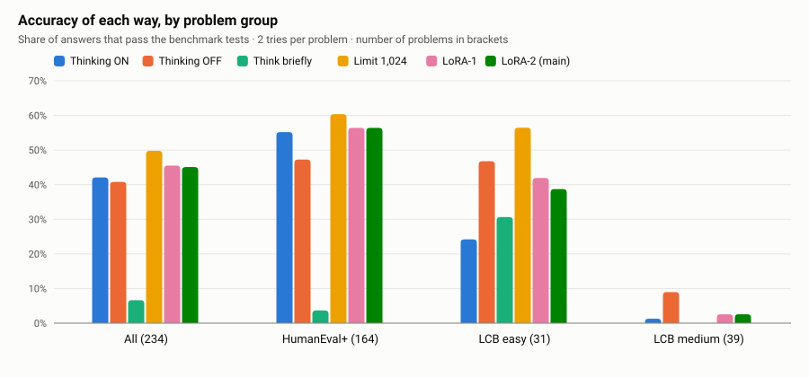
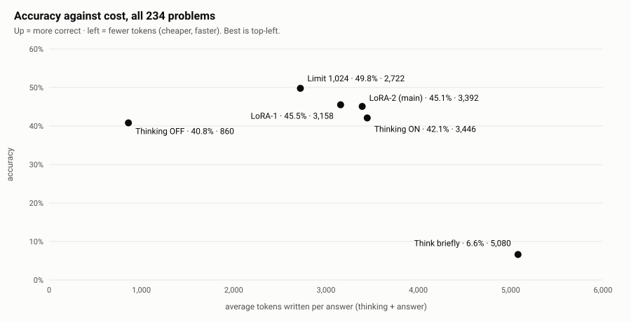
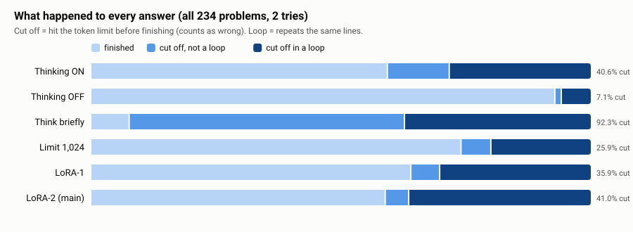
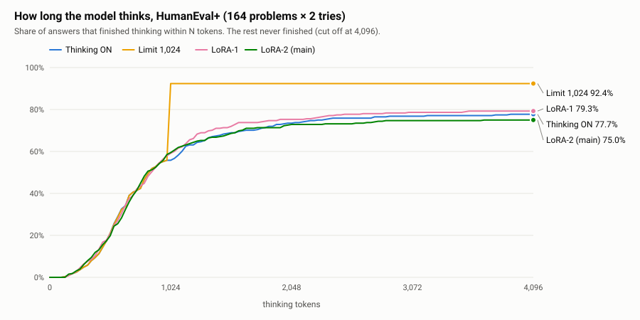
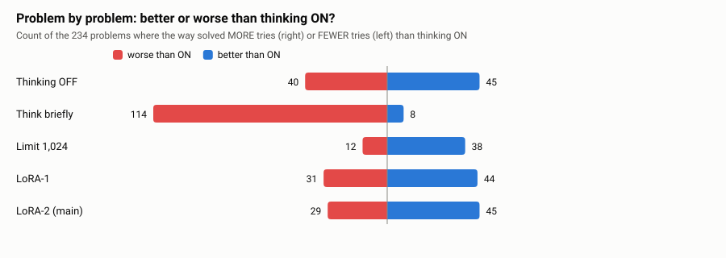
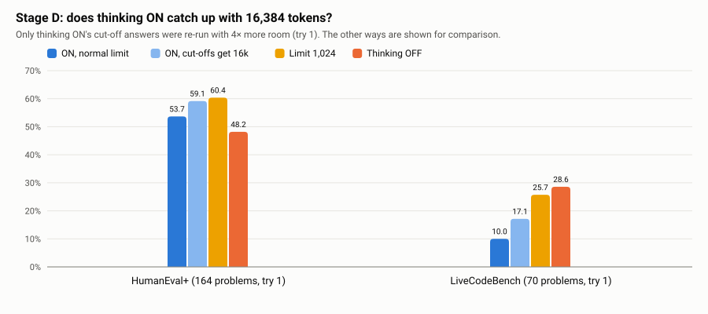
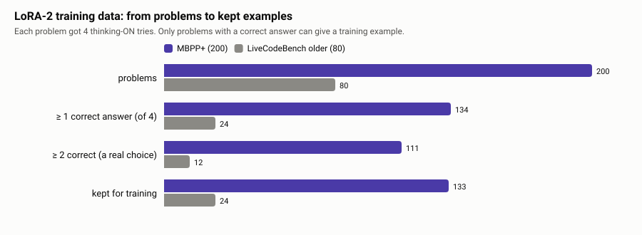
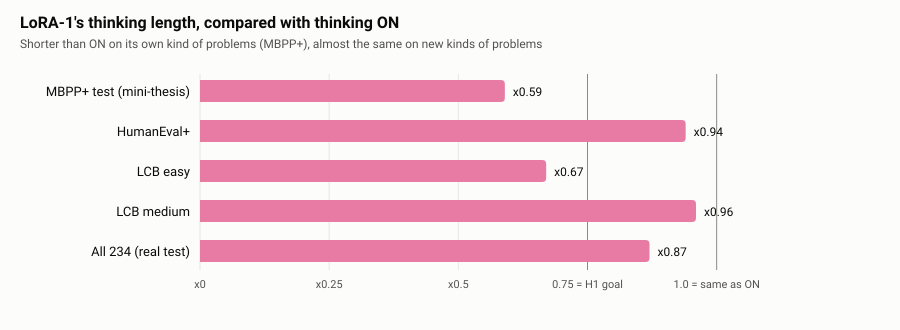

Author: [your name] · Supervisor: [supervisor's name] · [University], [Department] · September 2026
Some AI models "think" before they answer. They write notes to themselves first, then give the answer. Thinking often makes answers better, but it costs time and computer power. Small models are said to overthink: they think far longer than they need to.
This thesis asks one question: on a small model with a thinking switch, is it better to train the model to think shorter, or to use a free option? The free options are: switch thinking off, stop thinking at a fixed length, or ask the model in words to "think briefly".
We used the model Qwen3.5-2B and 234 code problems from two well-known test sets (HumanEval+ and LiveCodeBench). We trained a small add-on (a LoRA) on the model's own shortest correct answers. Then we compared six ways of answering on the same problems, two tries each. Every answer was checked by running the test sets' own tests.
Main results.
Conclusion. For a small reasoning model on code, the waste is not long, careful thinking but getting stuck. A free thinking limit handles this better than training. We suggest testing larger models, which may loop less, as future work.
Keywords: reasoning models, overthinking, thinking budget, LoRA, code generation, efficient inference.
Imagine a student who writes five pages for every exam question, even "what is 2 + 2?". That is slow, and it doesn't make the answers better. New AI models do something similar. Before they answer, they "think" by writing notes to themselves. On easy code problems, these notes are often much longer than needed.
┌─ 1. Thinking OFF (switch it off)
├─ 2. Thinking ON (normal: what we compare against)
Same model, same 234 ─────┼─ 3. "Think briefly" (ask in words)
code problems ├─ 4. Thinking limit (stop thinking at 1,024 tokens)
├─ 5. LoRA-1 (trained on short correct answers, small)
└─ 6. LoRA-2 (trained on short correct answers, bigger)
Ways 1–4 are free: no training is needed. Ways 5–6 need training. We wanted to know: is training worth it?
Accuracy on 234 code problems (higher is better)
Thinking limit ██████████████████████████ 49.8% ← best, and proven
LoRA-1 ███████████████████████ 45.5%
LoRA-2 (main) ███████████████████████ 45.1% (not shorter)
Thinking ON ██████████████████████ 42.1% (what we compare against)
Thinking OFF █████████████████████ 40.8% (4× cheaper)
"Think briefly" ███ 6.6% (confused the model)
We read the answers that were too long. Most of them were loops: the model wrote the same few lines again and again until it ran out of space. So the model was not "thinking too carefully". It was stuck.
For small AI models that write code, a free thinking limit works better than training the model to think shorter. Before spending money on training, try the free options first.
| Research question | Is training a small model to think shorter better than the free options? |
| Answer | No. A free thinking limit was better. |
| Model | Qwen3.5-2B (2 billion parameters, has a thinking on/off switch) |
| Test problems | 234: HumanEval+ (164) and LiveCodeBench (70: 31 easy, 39 medium) |
| Answers checked | 2,808 test answers (6 ways × 234 problems × 2 tries), plus 96 re-runs with more room |
| How answers were checked | By running each test set's own tests on the code (no checking by eye) |
| Best way | Thinking limit at 1,024 tokens: 49.8%, +7.7 points over normal thinking [+4.3, +11.3] |
| Cheapest way | Thinking off: 860 tokens per answer (normal thinking: 3,446) |
| Main reason | Long answers were mostly loops (69.5% of normal thinking's unfinished answers) |
| Computer used | One Google Colab A100 GPU, about 38 paid units |
AI models that write text, called large language models (LLMs), are now used every day to write computer code. A newer kind, the reasoning model, does something extra. Before it answers, it writes a thinking part: notes to itself, like a student's rough work on scrap paper. Then it writes the answer.
Thinking often helps. But it has a price. Every word the model writes costs time, electricity and money. Researchers have noticed that reasoning models often overthink. They write long thinking even for easy questions, where a short answer would be just as correct (Sui et al., 2025).
Everyday example. A student writes five pages for every exam question, even "what is 2 + 2?". The answers are not better, but the exam takes much longer.
This matters most for small models. Small models are cheap and can run on one ordinary graphics card (GPU). That is why people use them. If they waste most of their time on unneeded thinking, that advantage is lost.
There are two kinds of fixes.
The free fixes need no training:
| Free fix | How it works |
|---|---|
| Thinking OFF | Many 2026 models have a switch that turns thinking off. The model answers directly. |
| Thinking limit | Let the model think, but stop it after a fixed number of words and make it answer. |
| "Think briefly" | Ask the model in the question to keep its thinking short. |
The trained fix teaches the model to think shorter by itself. A simple way is: let the model answer each practice problem several times, keep its shortest answer that is still correct, and train the model on those short answers (Munkhbat et al., 2025). Earlier work did this on math, and on code with larger models of 7–8 billion parameters, and reported 23–40% shorter thinking (SEER, 2025; ASAP, 2025).
The trained fix costs work and computer time. The free fixes cost nothing. So the key question is: is training worth it compared with the free fixes, on the same model?
We found no study that answers this for a small model that has a thinking switch, on code. Earlier training studies used models without a switch, so they could not compare with "thinking off". Studies of the switch (for example HRBench, 2026) compared ways of using the switch, but not a model trained to think shorter.
On a small model with a thinking switch, does training on its own shortest correct code answers give a better balance of accuracy and thinking length than the free options?
We expected yes. Our hypothesis had three parts. Compared with normal thinking, the trained model would:
All three rules were written down before we saw any result (Chapter 3). This matters: it stops us from choosing the rules later to fit the results.
PROBLEM → GAP → QUESTION → HYPOTHESIS → EXPERIMENT → DATA → RESULTS → ANALYSIS → CONCLUSION
1.1 1.3 1.4 1.4 Ch. 3 Ch. 3 Ch. 5 Ch. 6 Ch. 7
The answer was no. Training did not make the model think shorter on the test problems. The free thinking limit was the most accurate way of all. The reason surprised us: the long answers were mostly loops, not careful thinking. Chapters 5 and 6 show the evidence.
| Chapter | What it covers |
|---|---|
| 2. Background | What LLMs, tokens, thinking, LoRA and code test sets are; earlier work |
| 3. Method | The six ways of answering, the data, the training, the fairness rules |
| 4. How we measure | How a pass is decided, how accuracy, points, error bars and loops are computed |
| 5. Results | All numbers, tables and charts |
| 6. Analysis | Why it happened, how it fits earlier work, and what could be wrong |
| 7. Conclusion and future work | The answer, advice, and what to test next (including bigger models) |
This chapter explains the ideas the thesis builds on, from the ground up. If you already know how language models work, you can skip to Section 2.7.
A large language model (LLM) is a computer program that writes text. It works by guessing the next piece of text again and again.
Everyday example. Your phone's keyboard suggests the next word as you type. An LLM is the same idea, but much bigger and much better. It can continue a question with a whole correct answer.
The model learned to guess by reading a huge amount of text. What it learned is stored in billions of numbers called parameters. Our model, Qwen3.5-2B, has about 2 billion parameters. That is small for 2026. It fits on one graphics card.
The model doesn't read or write whole words. It uses tokens: small pieces of text, about ¾ of a word on average. "Overthinking" might be split into "Over" + "think" + "ing".
Tokens are how we measure cost. The model writes one token at a time, so:
more tokens → more time → more electricity → more money
In this thesis, "the model wrote 3,446 tokens" means it wrote about 2,600 words.
A reasoning model writes two parts:
Question → [ THINKING: notes to itself ... ] → [ ANSWER: the final code ]
The thinking part is like a student's rough work on scrap paper. It often makes the final answer more correct.
In our model, the thinking ends with a special marker, </think>. Everything before the marker is thinking.
Everything after it is the answer.
Many 2026 models, including the Qwen3.5 family, have a thinking switch. With the switch ON, the model thinks
before answering. With it OFF, the model answers directly. Qwen3.5-2B is OFF by default; we turned thinking on
where needed with the setting enable_thinking=True.
Overthinking means thinking much longer than needed, for example checking an easy answer again and again (Sui et al., 2025).
A related but different problem is the loop (also called repetition). The model starts repeating the same lines, and never reaches the end marker:
"...I'll track opening and closing parentheses... The implementation requires careful tracking...
...I'll track opening and closing parentheses... The implementation requires careful tracking...
...I'll track opening and closing parentheses..." ← until it runs out of space
This difference turns out to be the key to our results. Overthinking still ends with an answer. A loop never ends by itself. The makers of our model warn about exactly this. The official Qwen3.5-2B model card says: "Qwen3.5-2B is more prone to entering thinking loops compared to other Qwen3.5 models, which may prevent it from terminating generation properly."
Training (or fine-tuning) means showing the model examples and nudging its parameters so it becomes more likely to write text like those examples.
Changing all 2 billion parameters is expensive. LoRA (Low-Rank Adaptation; Hu et al., 2022) is a cheaper way. It leaves the model unchanged and trains a small add-on that sits on top of it.
Everyday example. Instead of rewriting a whole textbook, you add sticky notes to some pages. The book stays the same; the notes change how you read it.
Our LoRA add-ons are about 44 MB, against 4.6 GB for the model.
The idea we test comes from Munkhbat et al. (2025):
1. The model answers each practice problem several times (here: 4 times).
2. Check each answer with the problem's tests.
3. Keep the SHORTEST answer that is still CORRECT.
4. Train the model on these short, correct answers.
The hope is that the model learns the habit: "stop thinking once you have enough".
What earlier work found:
| Work | Setting | Result |
|---|---|---|
| Munkhbat et al., 2025 | Math, models of 1.5–8B | About 12% fewer tokens with a plain prompt, accuracy about the same |
| SEER, 2025 | Code, a 7B model | About 40% shorter thinking; LoRA about 7 points less accurate than full training |
| ASAP, 2025 | Code, 7–8B models | 23.5% fewer tokens on LiveCodeBench |
| S3-CoT, 2026 | — | Warns that training on the very shortest answers hurts accuracy |
None of these models had a thinking switch, so none could compare training with simply turning thinking off.
Two recent findings matter for a 2-billion-parameter model:
We did not know these when we planned the study. They help explain our results (Chapter 6).
A benchmark is a fixed set of problems with a fair way to check answers. For code, the check is to run the code against tests. A test case is one input with the expected output:
Problem: write add(a, b)
Test 1: add(2, 3) should give 5
Test 2: add(-1, 1) should give 0
Answer passes only if it passes ALL tests.
We used two benchmarks:
| Benchmark | What the problems are like | Tests |
|---|---|---|
| HumanEval+ (Liu et al., 2023) | 164 easy problems: complete one Python function | The original HumanEval tests extended "by 80x" with extra, harder tests |
| LiveCodeBench (Jain et al., 2024) | Programming-contest problems: read input, print output | Hidden tests from the contest site; new problems are added over time |
LiveCodeBench keeps adding new problems. We used problems released from February 2025 on, to lower the chance that the model saw them while it was being built. We also used MBPP+ (Liu et al., 2023), a set of easy Python problems, but only for training and for our pilot study, never as test problems in the main run.
Reasoning models think before answering → thinking costs tokens → small models may overthink
→ or get stuck in LOOPS
Fixes: FREE (off / limit / "brief") vs TRAINED (shortest-correct LoRA)
Nobody had compared them on one small model with a switch, on code → this thesis
This chapter says what we did and why. Chapter 4 explains how we measured it.
TRAINING (only for the LoRAs)
MBPP+ 200 + old LiveCodeBench 80 ──► model answers 4× ──► check with tests ──► keep shortest correct ──► train LoRA-2
(pilot: MBPP+ 100) ────────────────────────────────────────────────────────────────────────────────────► LoRA-1
TESTING (the same for all six ways)
234 test problems ──► 6 ways × 2 tries = 2,808 answers ──► run the tests ──► accuracy, tokens, loops
The design is a comparison on the same problems: every way answers exactly the same 234 problems, with the same settings, so the only thing that changes is the way of answering.
| Model | Qwen3.5-2B (unsloth/Qwen3.5-2B), released February 2026, Apache-2.0 licence |
| Size | about 2 billion parameters; 4.6 GB in 16-bit |
| Why this model | Small, has a real thinking switch, free licence, and fast enough to finish in our time (Section 3.10) |
| Settings when answering | temperature 0.6, top-p 0.95, top-k 20 — the model makers' own settings for coding in thinking mode |
Temperature, top-p and top-k control how random the model's word choices are. We used the official settings, so the model is not disadvantaged by our choices.
| # | Way | Exactly what we did |
|---|---|---|
| 1 | Thinking ON | Switch on. The model thinks as long as it wants (up to the overall token limit). What we compare against. |
| 2 | Thinking OFF | Switch off. The model answers directly. |
| 3 | Think briefly | Switch on, and one sentence added to the question: "Think briefly: keep your thinking to a few short sentences, then give the answer." |
| 4 | Thinking limit | Switch on. After 1,024 thinking tokens we stop the thinking, add the end-of-thinking marker ourselves, and let the model write its answer. |
| 5 | LoRA-1 | Switch on, plus the LoRA trained in the pilot study (100 MBPP+ training problems). |
| 6 | LoRA-2 (main) | Switch on, plus the LoRA trained for this run (200 MBPP+ + 80 older LiveCodeBench problems). |
Why 1,024 for the limit? In the pilot study, the trained model thought for about 1,000 tokens. So the limit asks a fair question: is a simple hard cut as good as training?
Why LoRA-2 is the main one. We decided before the run that LoRA-2 would be the main result if it was trained. This stops us from picking whichever LoRA looks best afterwards.
| Set | Problems | Level | What the model must do |
|---|---|---|---|
| HumanEval+ | 164 | easy | Complete one Python function |
| LiveCodeBench | 31 | easy | Write a full program: read input, print output (a few are class methods) |
| LiveCodeBench | 39 | medium | The same, harder |
| Total | 234 |
The question the model saw (identical for every way, except "think briefly"):
HumanEval+: "Complete this Python function. Answer with one Python code block only,
containing the complete function." + the function to complete
LiveCodeBench: the problem text + "Write a complete Python program. It reads from standard input and
prints the answer to standard output. Answer with one Python code block only."
| Pool | Problems | Why |
|---|---|---|
| MBPP+ | 200 | Easy Python problems with good tests; the pilot showed they work |
| LiveCodeBench, older (release v1, before February 2025) | 80 (40 easy + 40 medium) | The same type as the LiveCodeBench test problems, but older, so they can never be test problems |
Overlap check. No test problem may appear in the training data. A script compared every training problem with
every test problem and removed any that had the same function name, or shared many 5-word pieces of text (30% or
more). It removed one training problem (Mbpp/309).
For each training problem:
1. Thinking ON answers it 4 times (token limit: 4,096 for MBPP+, 8,192 for LiveCodeBench).
2. Each answer is checked with the problem's tests.
3. From the correct answers, keep the SHORTEST one ...
4. ... but never one shorter than HALF of the middle (median) correct length for that problem.
Why step 4? The S3-CoT paper warns that training on the very shortest answers can hurt accuracy. A lucky, too-short answer would teach "always stop early". So we keep the shortest reasonable answer.
The kept answer is stored word for word, with its thinking and its code, and becomes one training example.
| Setting | Value |
|---|---|
| Method | LoRA on the attention and feed-forward layers |
| LoRA size | rank 16, alpha 16 |
| Learning rate | 0.0002, with a short warm-up |
| Epochs (passes over the data) | 3 |
| Batch | 1 example × 4 steps gathered together |
| Seed | 3407 |
| Tool | Unsloth, following its Qwen3.5 guide |
LoRA-2 trained on 157 examples (133 from MBPP+, 24 from LiveCodeBench) in about 6 minutes.
A safety check on the add-on. In the pilot we found that the saved LoRA could load "empty", with its parts matched to nothing, so the "trained" model silently behaved like the untrained one. The answering script now stops if any LoRA part is not matched to the model. This check passed for both LoRAs.
Before the main run, we ran the whole method once, small:
Pilot result: LoRA-1 used 41% fewer tokens than thinking ON (x0.59) and was more accurate (65% against 50%). This was a strong sign that the method works, so we went ahead with the main run. The main run then tested whether this holds on different problems (Chapter 5.10).
| Rule | Value | Why |
|---|---|---|
| Same problems for every way | all 234 | a fair, paired comparison |
| Same overall token limit for every way | 4,096 (HumanEval+), 8,192 (LiveCodeBench) | nobody gets more room |
| Same settings and seeds | temperature 0.6, top-p 0.95, top-k 20; a fixed seed per try | only the way of answering changes |
| Same prompt | except the one extra sentence for "think briefly" | |
| Tries per problem | 2 | budget (Section 3.10) |
| Main LoRA | LoRA-2 | fixed in advance |
| Hypotheses and their thresholds | H1–H3 (Section 1.4) | fixed in advance |
| Grading | the benchmarks' own tests, never by eye | Chapter 4 |
| Raw answers | every answer saved word for word | anyone can re-check |
Why 4,096 and 8,192? HumanEval+ problems are easy; in the pilot almost every answer that reached 4,096 was a loop. LiveCodeBench has medium problems, where honest reasoning can be longer. To check that these limits did not unfairly hurt normal thinking, we re-ran thinking ON's cut-off answers with 16,384 tokens (Section 4.9).
| Stage | What | Colab units (estimated) |
|---|---|---|
| Smoke test | every way on 2 problems per set, to check that everything works | 0.6 |
| A | 5 ways × 234 problems, try 1 | 2.9 on 24 Sept, plus part of the 21 Sept session (that session used about 8.7 units in total, including idle time) |
| B | make LoRA-2's training data, train LoRA-2, test it (try 1) | 9.0 |
| C | try 2 for all 6 ways | 10.3 |
| D | re-run thinking ON's cut-off answers with 16,384 tokens | 4.2 |
We report every change honestly. All were made before the main results were seen.
| Proposal | What we did | Why |
|---|---|---|
| Model Gemma-4-E4B | Qwen3.5-2B | Gemma ran at only about 4.4 tokens per second on a free GPU; far too slow to finish. Qwen3.5-2B is smaller and has the same kind of switch. |
| Free GPUs only ($0) | A small paid Colab package (A100) | A one-week deadline; free GPUs were too slow. |
| About 1,000 test problems incl. MBPP+ | 234 (HumanEval+ + LiveCodeBench) | 1,000 problems × 5 ways × 4 tries would need 13+ GPU hours. |
| 4 tries per problem | 2 | Budget. Cost: wider error bars. |
| Training on DeepCoder and APPS | MBPP+ + older LiveCodeBench | Already loaded and graded by tested code; less risk in one week. |
| Five ways of answering | Six (two LoRAs) | LoRA-2 added medium-style training problems; LoRA-1 kept for comparison. |
Every number in this thesis comes from one of the steps below. This chapter explains each step with a small worked example, so anyone can check our numbers by hand.
answer text ─► take out the code ─► run the tests ─► PASS or FAIL ─► accuracy ─► compare two ways ─► error bar
└──────► count tokens (thinking / answer) ─► cost ─► cut off? loop?
The model's answer is text. We look for the last Python code block in the answer part (the text after the
end-of-thinking marker </think>). That code is what we test.
If the model never reached </think>, there is no answer part, so there is no code to test. That answer is a
fail (Section 4.9).
We never judge code by reading it. We run it against the benchmark's own tests:
| HumanEval+ | LiveCodeBench | |
|---|---|---|
| What a test is | A call like has_close_elements([1.0, 2.8, 3.0], 0.3) with the correct result |
An input text fed to the program, and the exact output it must print |
| Which tests | All of HumanEval+'s tests (the original ones extended "by 80x", Liu et al., 2023) | The problem's public and hidden tests; we use up to 20 per problem to keep grading fast |
| How output is compared | The test program checks the result itself | Line by line, ignoring spaces at the end of lines |
| Time limit | 30 seconds for the whole test program | 20 seconds per test |
Safety. The code runs in a separate process, in a temporary folder, with the time limit. It never runs inside our notebook.
An answer PASSES only if it passes EVERY test. One failed test = FAIL.
An answer fails if any of these happen:
| Why it failed | Real example from our data |
|---|---|
| Wrong result on a test | wrong answer on test 1 (the most common reason: 337 times) |
| The code crashes | NameError: name 'List' is not defined (a missing import) · SyntaxError: invalid syntax |
| The code is too slow | timeout (13 times in all 2,808 answers) |
| No code at all (cut off) | the answer never finished thinking; the test then can't find the function, e.g. NameError: name 'separate_paren_groups' is not defined |
This is strict, and the same for every way.
A broken checker would make every number wrong. So before grading any model answer, the notebook graded the benchmarks' official correct solutions for 30 HumanEval+ and 20 MBPP+ problems. All had to pass, or the run would stop. They all passed.
Accuracy = answers that passed ÷ all answers
Worked example (thinking ON, all 234 problems):
234 problems × 2 tries = 468 answers
passed: 197
accuracy = 197 ÷ 468 = 0.421 = 42.1%
Every problem has exactly 2 tries, so every problem counts equally.
When we compare two accuracies, we use percentage points ("points"):
Thinking limit 49.8% − Thinking ON 42.1% = +7.7 points
This is not "+7.7 percent". In relative terms, 7.7 ÷ 42.1 is an 18% improvement. We always report points, because they are simpler and cannot be inflated by a small starting value.
Some problems are easy and some are hard. If one way happened to get easier problems, it would look better for no real reason. So we always compare two ways on the same problems, one problem at a time.
For each problem, each way's score is the share of its 2 tries that passed (0, ½ or 1). Then:
Problem Thinking ON Thinking limit difference (points)
HumanEval/12 1/2 = 50% 2/2 = 100% +50
HumanEval/40 0/2 = 0% 0/2 = 0% 0
lcb/3705 0/2 = 0% 1/2 = 50% +50
... ... ... ...
average over all 234 problems +7.7 points
(The three rows are made-up examples to show the idea. The +7.7 is the real average.)
With only 234 problems and 2 tries each, some difference can appear just by luck. An error bar (a 95% interval) shows how big the difference could reasonably be.
We compute it with the bootstrap, a method that uses the data itself:
1. Take our 234 problems.
2. Draw 234 problems AT RANDOM from them, WITH replacement
(so some problems appear twice and some not at all).
3. Compute the average difference on this new set.
4. Repeat 2,000 times. → 2,000 slightly different averages
5. Sort them. The 50th and the 1,950th values are the error bar (the middle 95%).
Tiny example with 5 problems. Differences: +50, 0, 0, +100, −50. Average = +20.
random draw 1: +50, +50, 0, −50, +100 → average +30
random draw 2: 0, 0, −50, −50, 0 → average −20
random draw 3: +100, +50, +100, 0, 0 → average +50
... 2,000 draws ... sort ... keep the middle 95%
With only 5 problems the draws jump around a lot, so the error bar would be very wide. With 234 problems it is much narrower.
The rule we use:
If the whole error bar is above 0, the way is proven better on this test set. If it is below 0, it is proven worse. If it includes 0, we cannot tell.
Real example: thinking limit vs ON = +7.7 [+4.3, +11.3]. The whole bar is above 0, so the limit is proven better. LoRA-2 vs ON = +3.0 [−1.1, +7.3]. The bar includes 0, so we cannot say LoRA-2 is better.
The random draws use a fixed seed (3407), so running the script again gives exactly the same error bars.
We count tokens with the model's own tokenizer:
[ thinking tokens ........ ] </think> [ answer tokens ]
thinking answer part
|───────────────────── all tokens ──────────────────────|
</think>.Cut off. Every way had the same overall limit: 4,096 tokens (HumanEval+) or 8,192 (LiveCodeBench). If an answer reaches the limit before it ends, it is cut off. If it was still thinking, all its tokens count as thinking and there is no code, so it fails. The rule is the same for every way.
To compare thinking length, we divide:
thinking ratio = total thinking tokens of a way ÷ total thinking tokens of thinking ON (same problems)
It gets an error bar in the same way as accuracy (Section 4.8).
Watch out: the thinking limit stops thinking at 1,024 tokens, but the model can keep reasoning inside its answer part. So for the limit we also report all tokens, which gives the honest saving (Chapter 5.3).
A few very long answers can pull an average up a lot. So we also report the median: sort all the values and take the middle one.
lengths 500, 600, 700, 800, 4,096 → average 1,339, median 700
We use the median of finished answers (not cut off) to show how long normal, successful thinking is.
To check whether a cut-off answer is a loop, we use a simple rule:
Take a piece of the answer's last 200 characters. If that exact piece already appears at least twice earlier in the same answer, the answer is a loop.
"... I'll track opening and closing parentheses ... [same text] ... [same text] ... [same text]"
▲ last 200 characters
also found twice earlier → LOOP
This rule is strict. It misses loops where the model repeats with small changes. So our loop counts are a lower bound: the real number is probably higher.
For each problem we also ask: did a way solve more of its 2 tries than thinking ON, fewer, or the same? Counting problems gives a simple picture that doesn't depend on averages (Chapter 5.6).
A fixed limit might cut off long but useful thinking. To test this, we took every thinking-ON answer from try 1 that was cut off, and ran it again with 16,384 tokens, four times the room. If many of them then finish and pass, the limit was unfair to thinking ON. Chapter 5.7 gives the answer.
We also record how long the GPU took. Each batch of answers has a measured time, which we share equally among its answers. But a batch waits for its slowest answer, so GPU time mostly reflects how we grouped answers. That is why we use tokens, not minutes, as the measure of cost.
| Evidence | File |
|---|---|
| Every raw answer, word for word (thinking + code) | results/2026-09-24-thesis-run/test-*.jsonl |
| Every grade (passed, why not, tokens, cut off) | results/2026-09-24-thesis-run/test-*-graded.csv |
| Error bars printed by the run | results/2026-09-24-thesis-run-step12-output.txt |
| All tables, charts and problem lists | results/full-results/FULL-RESULTS.md |
| The scripts that compute them | scripts/compare_thesis.py, scripts/make_full_results.js, scripts/check_thesis_run.js |
Anyone can re-grade or re-count everything from the raw answers, without a GPU.
This chapter gives the numbers, without opinions. Chapter 6 explains them. Chapter 4 explains how each number was computed. The full tables, every problem, and all charts are in results/full-results/FULL-RESULTS.md.
What was run: 6 ways × 234 problems × 2 tries = 2,808 test answers, all checked with the benchmarks' own tests, on one Colab A100 GPU (2026-09-21 to 2026-09-24).
Stopping the model's thinking at 1,024 tokens gave the highest accuracy of all six ways: 49.8%, against 42.1% for normal thinking. This is +7.7 points, and the error bar [+4.3, +11.3] is fully above zero.
The evidence, all on the same 234 problems:
| # | Evidence | Number | Proven? |
|---|---|---|---|
| 1 | More accurate than normal thinking | +7.7 points [+4.3, +11.3] | ✅ yes |
| 2 | More accurate than our trained model (LoRA-2) | +4.7 points [+0.2, +9.0] | ✅ yes |
| 3 | More accurate than thinking OFF | +9.0 points [+3.8, +14.3] | ✅ yes |
| 4 | Rarely makes a problem worse | better than ON on 38 problems, worse on only 12 | — |
| 5 | Far fewer unfinished answers | 25.9% cut off, against 40.6% for normal thinking | — |
| 6 | Cheaper than normal thinking | 2,722 tokens per answer, against 3,446 (21% fewer) | — |
| 7 | Works on easy problems of both test sets | HumanEval+ +5.2 [+1.2, +9.1]; LiveCodeBench easy +32.3 [+17.7, +46.8] | ✅ yes, both |
Where it does not help: on LiveCodeBench medium problems it solved nothing (0 of 78 answers). Stage D (Section 5.7) also shows that part of its advantage on HumanEval+ comes from our 4,096-token limit.
Table 5.1. Accuracy (answers passed ÷ answers). "vs ON" is the difference from thinking ON in points, with the 95% error bar.
| Way | All 234 | vs ON | HumanEval+ (164) | LCB easy (31) | LCB medium (39) |
|---|---|---|---|---|---|
| Thinking limit | 49.8% (233/468) | +7.7 [+4.3, +11.3] | 60.4% | 56.5% | 0.0% |
| LoRA-1 | 45.5% (213/468) | +3.4 [−0.4, +7.7] | 56.4% | 41.9% | 2.6% |
| LoRA-2 (main) | 45.1% (211/468) | +3.0 [−1.1, +7.3] | 56.4% | 38.7% | 2.6% |
| Thinking ON | 42.1% (197/468) | — | 55.2% | 24.2% | 1.3% |
| Thinking OFF | 40.8% (191/468) | −1.3 [−6.6, +4.3] | 47.3% | 46.8% | 9.0% |
| Think briefly | 6.6% (31/468) | −35.5 [−41.2, −29.3] | 3.7% | 30.6% | 0.0% |

Figure 5.1. Accuracy of each way, by problem group.
Differences by group (vs thinking ON):
| Way | HumanEval+ | LCB easy | LCB medium |
|---|---|---|---|
| Thinking limit | +5.2 [+1.2, +9.1] | +32.3 [+17.7, +46.8] | −1.3 [−3.8, 0.0] |
| LoRA-1 | +1.2 [−3.7, +6.4] | +17.7 [+3.2, +32.3] | +1.3 [−2.6, +5.1] |
| LoRA-2 | +1.2 [−4.3, +6.7] | +14.5 [+3.2, +29.0] | +1.3 [−2.6, +5.1] |
| Thinking OFF | −7.9 [−14.6, −1.2] | +22.6 [+8.1, +37.1] | +7.7 [+1.3, +15.4] |
| Think briefly | −51.5 [−57.9, −44.8] | +6.5 [−6.5, +19.4] | −1.3 [−3.8, 0.0] |
Bold = proven (the error bar doesn't include 0).
Extra comparisons (computed with the same method after the run; not part of the planned hypotheses):
| Comparison | All | HumanEval+ | LCB easy | LCB medium |
|---|---|---|---|---|
| Limit − OFF | +9.0 [+3.8, +14.3] | +13.1 [+6.4, +19.2] | +9.7 [−4.8, +24.2] | −9.0 [−16.7, −2.6] |
| Limit − LoRA-2 | +4.7 [+0.2, +9.0] | +4.0 [−1.5, +9.5] | +17.7 [+1.6, +33.9] | −2.6 [−6.4, 0.0] |
| LoRA-2 − LoRA-1 | −0.4 [−4.5, +3.8] | 0.0 [−5.5, +5.2] | −3.2 [−16.1, +9.7] | 0.0 [−3.8, +3.8] |
LoRA-2 and LoRA-1 were the same: the extra training data did not help.
Table 5.2. Tokens per answer, all 234 problems.
| Way | All tokens (average) | Thinking (average) | Answer part (average) | Thinking of finished answers (median) | Thinking vs ON |
|---|---|---|---|---|---|
| Thinking OFF | 860 | 0 | 860 | 0 | x0.00 |
| Thinking limit | 2,722 | 843 | 1,879 | 880 | x0.26 [0.23, 0.29] |
| LoRA-1 | 3,158 | 2,838 | 320 | 740 | x0.87 [0.81, 0.93] |
| LoRA-2 (main) | 3,392 | 3,252 | 140 | 719 | x1.00 [0.94, 1.06] |
| Thinking ON | 3,446 | 3,262 | 185 | 751 | — |
| Think briefly | 5,080 | 5,064 | 16 | 3,547 | x1.55 [1.43, 1.70] |

Figure 5.2. Accuracy against tokens per answer. The best place is top-left: accurate and cheap.
The hypotheses were fixed before the run, for the main trained model, LoRA-2.
Table 5.3. The hypotheses.
| Hypothesis | Needed | Result | Verdict | |
|---|---|---|---|---|
| H1 | Thinking at least 25% shorter than ON | ≤ x0.75 | x1.00 [0.94, 1.06] | ❌ Rejected |
| H2 | Accuracy at most 3 points below ON | ≥ −3 | +3.0 [−1.1, +7.3] | ✅ Supported |
| H3a | More accurate than thinking OFF | > 0 | +4.3 [−0.6, +9.2] | ⚠️ Not shown (bar includes 0) |
| H3b | More accurate than the thinking limit | > 0 | −4.7 [−9.0, −0.2] | ❌ Rejected: the limit is better |
| H3c | More accurate than "think briefly" | > 0 | +38.5 [+32.9, +44.2] | ✅ Supported (but see 5.8) |
The overall hypothesis is rejected: H1 and H3b fail.
Many thinking answers never finished. We checked each unfinished answer for a loop (Section 4.12).
Table 5.4. Cut-offs and loops (468 answers per way).
| Way | Cut off | Of those, loops |
|---|---|---|
| Thinking OFF | 33 (7.1%) | 27 (81.8%) |
| Thinking limit | 121 (25.9%) | 93 (76.9%) |
| LoRA-1 | 168 (35.9%) | 141 (83.9%) |
| Thinking ON | 190 (40.6%) | 132 (69.5%) |
| LoRA-2 (main) | 192 (41.0%) | 170 (88.5%) |
| Think briefly | 432 (92.3%) | 174 (40.3%) |

Figure 5.3. Finished, cut off in a loop, or cut off without a loop.
Finished answers were short. On HumanEval+, the median thinking of answers that finished was 672 tokens for ON, 711 for LoRA-1 and 695 for LoRA-2. Up to about 1,000 tokens, the three curves in Figure 5.4 almost lie on top of each other. They differ mainly in how many answers never finish.

Figure 5.4. Share of HumanEval+ answers that finished thinking within N tokens.
A real loop (thinking ON, HumanEval/1, the end of an answer cut off at 4,096 tokens):
I'll track opening and closing parentheses, ensuring each group is properly balanced and separated. The
algorithm needs to handle potential edge cases like empty strings and ensure correct grouping.
The implementation requires careful tracking of parentheses groups, checking for balance, and collecting
valid groups into a list.
By iterating through the string, I can identify balanced groups without nested structures, ...
[the same three paragraphs repeat until the limit]
Table 5.5. Problems (of 234) where each way solved more of its 2 tries than thinking ON ("better"), fewer ("worse"), or the same.
| Way | Better | Worse | Same |
|---|---|---|---|
| Thinking limit | 38 | 12 | 184 |
| LoRA-2 (main) | 45 | 29 | 160 |
| LoRA-1 | 44 | 31 | 159 |
| Thinking OFF | 45 | 40 | 149 |
| Think briefly | 8 | 114 | 112 |

Figure 5.5. Problem by problem, against thinking ON.
The limit had the best balance: it made only 12 problems worse. Across all ways, 168 of the 234 problems were solved at least once; 66 were solved by no way at all.
We gave every cut-off thinking-ON answer from try 1 four times more room (16,384 tokens).
Table 5.6. Thinking ON with 16,384 tokens for its cut-off answers (try 1 only).
| HumanEval+ | LiveCodeBench | |
|---|---|---|
| Cut-off answers re-run | 36 | 60 |
| Now finished | 23 | 10 |
| Now correct | 9 | 5 |
| Still cut off, in a loop | 12 | 48 |
| Thinking ON, normal limit | 53.7% | 10.0% |
| Thinking ON, with 16,384 tokens | 59.1% | 17.1% |
| Thinking limit (try 1) | 60.4% | 25.7% |
| Thinking OFF (try 1) | 48.2% | 28.6% |

Figure 5.6. Thinking ON with four times more room, against the limit and OFF.
Only 36 of 468 "think briefly" answers finished. Our question already said "Answer with one Python code block only." The extra sentence said "Think briefly … then give the answer." The model treated these as two rules that clash, and argued about them until it ran out of space (HumanEval/0):
* "Answer with one Python code block only" suggests I should not include conversational filler.
* "Think briefly... then give the answer." suggests I should include the thinking.
...
* Wait, if I output thinking text, is it "one Python code block only"?
This result is about this wording combined with our answer rule. It does not show that asking to be brief never works.
Table 5.7. From training problems to training examples (4 thinking-ON tries per problem).
| MBPP+ | LiveCodeBench (older) | |
|---|---|---|
| Problems | 200 | 80 (40 easy, 40 medium) |
| Correct answers | 357 of 800 (44.6%) | 44 of 320 (13.8%); medium: 1 of 160 |
| Problems with ≥ 1 correct | 134 | 24 |
| Problems with ≥ 2 correct (a real choice of "shortest") | 111 | 12 |
| Kept as training examples | 133 | 24 |
| Median thinking of kept examples | 515 | 4,709 |
| Kept length ÷ average correct length (lower = more to learn) | 0.829 | 0.987 |

Figure 5.7. From problems to kept training examples.
Table 5.8. LoRA-1 against thinking ON, on different test sets.
| Test set | Thinking vs ON | Accuracy vs ON (points) |
|---|---|---|
| MBPP+ (pilot: the same kind of problems as its training) | x0.59 [0.46, 0.75] | +15.0 [+6.0, +25.0] |
| HumanEval+ | x0.94 [0.84, 1.05] | +1.2 [−3.7, +6.4] |
| LiveCodeBench easy | x0.67 [0.55, 0.79] | +17.7 [+3.2, +32.3] |
| LiveCodeBench medium | x0.96 [0.87, 1.05] | +1.3 [−2.6, +5.1] |
| All 234 (real test) | x0.87 [0.81, 0.93] | +3.4 [−0.4, +7.7] |

Figure 5.8. LoRA-1's thinking length compared with thinking ON.
On problems like its training data, training worked well (41% less thinking, +15 points). On new kinds of problems, most of the effect disappeared.
| Finding | Number |
|---|---|
| Most accurate way | Thinking limit, 49.8% (+7.7 [+4.3, +11.3] vs ON) |
| The limit beat the trained model | +4.7 [+0.2, +9.0] |
| The limit beat thinking OFF | +9.0 [+3.8, +14.3] |
| Trained model's thinking length | x1.00 of ON (not shorter) |
| Cheapest way | Thinking OFF: 860 tokens per answer, 40.8% accuracy |
| Long answers were mostly loops | 69.5% of ON's cut-offs, 88.5% of LoRA-2's |
| More room for ON (16k) | HumanEval+ 53.7% → 59.1%; LiveCodeBench 10.0% → 17.1% |
| Training helped only on similar problems | x0.59 on MBPP+, x0.94 on HumanEval+ |
Chapter 5 showed what happened. This chapter explains why, compares it with earlier work, and says honestly what could be wrong.
On a small model with a thinking switch, does training on its own shortest correct code answers give a better balance of accuracy and thinking length than the free options?
For Qwen3.5-2B, the answer is no.
accuracy tokens per answer
Thinking limit 49.8% ◄ best 2,722
LoRA-2 (trained) 45.1% 3,392 ◄ not shorter than ON
Thinking ON 42.1% 3,446
Thinking OFF 40.8% 860 ◄ cheapest
The trained model did not think shorter (x1.00), and its small accuracy gain could not be proven. The free thinking limit was more accurate than the trained model (+4.7, proven), more accurate than normal thinking (+7.7, proven), and cheaper. Thinking OFF was 4× cheaper than normal thinking, at about the same overall accuracy.
Shortest-correct training is built on one idea of overthinking: the model finds the answer, then keeps checking. If that were true, showing the model short correct answers would teach it to stop earlier.
Our data shows a different kind of waste:
What we expected (overthinking) What we found (looping)
─────────────────────────────── ────────────────────────────────
think ... answer found ... check ... think ... think ... [repeat] [repeat]
check ... check ... </think> answer [repeat] [repeat] ... ✂ cut off, no answer
→ finishes, just too long → never finishes
→ training CAN shorten it → training on finished answers can't fix it
The evidence:
Training only ever shows the model finished answers. It never shows how to get out of a loop. So it could not remove the main source of waste.
This fits a known finding about small models: "small models (≤3B parameters) do not consistently benefit from long chain-of-thought (CoT) reasoning" (Li et al., 2025).
In the pilot, where training and test problems came from the same benchmark (MBPP+), LoRA-1 cut thinking by 41% and gained 15 points. On HumanEval+, which has similar easy function problems from a different source, the effect almost disappeared (x0.94, +1.2). The training seems to teach habits for one kind of problem, not a general "think shorter" skill.
SEER (2025) reported that LoRA training was about 7 points less accurate than training the whole model. We only used LoRA. Training the whole model might learn more.
It stops loops by force. When thinking reaches 1,024 tokens, the model must answer.
Thinking ON: think ... [loop] [loop] [loop] ... ✂ cut off at 4,096 → no code → FAIL
Thinking limit: think ... [loop] ✂ stop at 1,024 → </think> → writes code → often PASS
On easy problems, most useful thinking fits inside 1,024 tokens (Figure 5.4: 183 of 328 ON answers on HumanEval+, 55.8%, finished thinking within 1,024 tokens). So when the loop is cut, the model usually already knows enough to write working code. That is why the limit made only 12 problems worse and 38 better.
Its limits:
Thinking OFF used 860 tokens per answer, 4× fewer than thinking ON, with about the same overall accuracy (−1.3, not proven). The groups differ:
NoThinking (2025) reported that skipping thinking can beat thinking with a small budget, also on code. In our study, the 1,024-token limit beat OFF overall (+9.0, proven), but OFF beat the limit on LiveCodeBench medium (−9.0 for the limit). The studies use different models and budgets, so they don't directly disagree. Both show that "thinking off" must always be part of the comparison.
| Earlier work | What they found | What we add |
|---|---|---|
| Munkhbat et al. (2025): shortest-correct training on math | ~12% fewer tokens, same accuracy | On a small code model, training did not shorten thinking on new problems |
| SEER (2025), ASAP (2025): code, 7–8B models | 23–40% shorter thinking | Our pilot agrees (41% shorter) only when test problems are like training problems |
| NoThinking (2025) | Thinking off is a strong option | Confirmed: 4× cheaper, same overall accuracy; better on the harder problems |
| s1 (2025), Qwen3 report (2025): thinking budgets | Budgets can control how much a model thinks | A budget was the most accurate way for a small model, because it stops loops |
| Pipis et al. (2025): why models loop | "Larger models tend to loop less" | We measured looping as the main waste in a 2B model, and showed that training on short answers doesn't fix it |
Our main new point: for a small reasoning model, the main waste is thinking that never finishes, not correct thinking that runs long. Methods that learn only from finished answers cannot address it.
Is the comparison fair?
Does it hold elsewhere?
Is it just luck?
Are we measuring the right thing?
Small model thinks ─► often gets STUCK IN A LOOP ─► never finishes ─► fails
│
Training on short correct answers: never shows how to get unstuck ─► no change (x1.00)
Thinking limit: cuts the loop, forces an answer ─► +7.7 points
Thinking OFF: never enters the loop ─► 4× cheaper
We asked whether training a small reasoning model to think shorter is better than the free options. On Qwen3.5-2B, for code, it is not. Training on the model's own shortest correct answers did not shorten its thinking on new problems. The most accurate way was a free one: stop thinking at 1,024 tokens. It reached 49.8%, against 42.1% for normal thinking (+7.7 points, proven), and it also beat the trained model and thinking off.
The reason is the most important lesson of this thesis:
A small reasoning model doesn't mainly waste tokens by thinking too carefully. It wastes them by getting stuck in loops. Training on short, finished answers can't teach it to get unstuck. A thinking limit simply cuts the loop.
1. Try a THINKING LIMIT first (for example ~1,000 tokens). → most accurate here, cheaper
2. Try THINKING OFF. → cheapest, often good enough
3. Watch for LOOPS: count answers that never finish. → they are the real waste
4. Train to think shorter ONLY if your real problems look like your training problems.
Our hypothesis assumed that the waste was overthinking: finished but too-long thinking. That assumption came from studies of larger models. For our small model it was wrong: the waste was looping. A rejected hypothesis with a clear, measured reason is a useful result. It tells the next study what to measure first (Section 7.5.2).
This is the most promising next step. Three pieces of evidence suggest that a bigger model may behave very differently:
| Evidence | Source | What it suggests |
|---|---|---|
| "Qwen3.5-2B is more prone to entering thinking loops compared to other Qwen3.5 models" | Official Qwen3.5-2B model card | The same family's larger models loop less |
| "Larger models tend to loop less" | Pipis et al. (2025), arXiv:2512.12895 | Looping goes down as model size goes up |
| "small models (≤3B parameters) do not consistently benefit from long chain-of-thought (CoT) reasoning" | Li et al. (2025), arXiv:2502.12143 | Larger models learn better from reasoning examples |
| Our own data: finished answers were short; the waste was loops | Chapter 5 | If a model loops less, its waste becomes "long but finished" thinking, which is what shortest-correct training can shorten |
Our expectations for a bigger model (to be tested, not claimed):
Qwen3.5-2B (measured) Bigger Qwen3.5, e.g. 4B or 9B (expected)
Loops many (69.5% of cut-offs) fewer
Normal thinking often never finishes finishes more often, but may run long
Room for training little (kept ÷ avg 0.83–0.99) more ("long but finished" thinking)
Training effect none on new problems (x1.00) may shorten thinking and keep accuracy
Thinking limit best way may lose its advantage if loops are rare
How to test it without wasting money: a "check first" step. Before training a bigger model, run a small, cheap check on about 40 problems (4 tries, thinking ON, a large token limit, and stop generation when the text repeats). Measure three numbers, with rules written down before looking:
| Check | What it tells us | Qwen3.5-2B | Go ahead if |
|---|---|---|---|
| Share of answers that loop | Is the waste loops? | 28% of thinking-ON answers (132 of 468) | ≤ 10% |
| Kept length ÷ average correct length | Is there short-but-correct thinking to learn from? | 0.83 (MBPP+), 0.99 (LCB) | ≤ 0.75 |
| Problems with ≥ 2 correct out of 4 | Can it solve the training problems? | 56% (MBPP+), 15% (LCB) | ≥ 50% in every set |
If the bigger model passes, training has a real chance. If it fails, it still tests our main explanation on a second model.
Practical notes. The Qwen3.5 family includes 0.8B, 2B, 4B and 9B models and larger ones, with the same thinking switch (for the 9B model, thinking is on by default). A 9B model should fit on one A100 or H100 GPU for LoRA training, but it writes each token more slowly, so a full run would cost several times our 38 units. These are estimates, not measurements.
Our results suggest attacking the loop itself:
presence_penalty between 0 and 2 can "reduce endless repetitions",
with some trade-offs. Pipis et al. (2025) found that a higher temperature reduces looping, though answers stay long. We used the
official coding settings (no penalty), so this is untested here.We set out to teach a small model to stop overthinking, and found that its real problem was getting stuck. For this model, the simplest free fix, a limit on thinking, beat training. The trained approach may still work for larger models that loop less; our "check first" step shows how to find out cheaply before paying for it.
Where each paper is discussed: 1–6 and 13–16 in Chapter 2; 5, 8, 9 in Sections 2.8 and 6.4–6.5; 10–12 in Sections 2.5, 2.9, 6.2 and 7.5. Notes on every paper we read are in PAPERS.md.
The full results page lists every test problem (all 234, with how many of its 2 tries each way solved) and every training problem (all 280, with how many of its 4 tries were correct and whether it was kept):
Re-check every number (no GPU needed, about one minute):
node scripts/make_full_results.js → rebuilds FULL-RESULTS.md, the charts and the tables
node scripts/check_thesis_run.js results/2026-09-24-thesis-run → loops, stage D, training data
Re-run the whole experiment (needs a Colab A100 and about 40 units):
notebooks/14_thesis_run.ipynb in Google Colab. Choose Runtime → Change runtime type → A100 GPU.MyDrive/stop-overthinking/results/mini/lora/lora100 (made by notebooks/13_mini_thesis.ipynb).Key scripts:
| Script | What it does |
|---|---|
scripts/gen_colab.py |
Makes the model answer, for every way (including the thinking limit and the LoRAs) |
scripts/prompts.py |
Builds the question and splits an answer into thinking and answer part |
scripts/grade_plus.py, scripts/grade_lcb.py |
Run the benchmarks' tests in a separate process |
scripts/overlap_check.py |
Removes training problems that are too close to a test problem |
scripts/make_train_set.py |
Keeps the shortest correct answer (at least half the median) |
scripts/train_lora.py |
Trains a LoRA |
scripts/compare_thesis.py |
Accuracy, token ratios, error bars, hypotheses |
| Date (2026) | Step |
|---|---|
| 13 Sept | Topic, gap and plan written; proposal written |
| 19–20 Sept | First model calls. Gemma-4-E4B too slow on free GPUs; pilot on 30 HumanEval problems |
| 20 Sept | Moved to Google Colab and Qwen3.5-2B; test set fixed at 234 problems |
| 22 Sept | Pilot study (the "mini-thesis") on MBPP+: training shortened thinking by 41% and gained 15 points |
| 22 Sept | Rules for the main run fixed before any result (token limits, main LoRA, budget) |
| 21–24 Sept | Main run on a Colab A100 |
| 25 Sept | Raw answers checked (loops found); results and thesis written |
Every choice and its reason is logged, with dates, in DECISIONS.md (69+ entries).
| Word | Meaning |
|---|---|
| Accuracy | Answers that passed all tests ÷ all answers |
| Benchmark | A fixed set of problems with a fair way to check the answers |
| Bootstrap | A way to get error bars: re-draw the problems at random 2,000 times and see how much the result moves |
| Cut off | The answer reached the token limit before it finished; it counts as a fail |
| Epoch | One pass over all the training examples |
| Error bar (95%) | The range the true difference very likely lies in; if it doesn't include 0, the difference is proven |
| Fine-tuning / training | Nudging the model's numbers with examples, so it writes more like them |
| GPU | The graphics card that runs the model |
| LoRA | A small add-on trained on top of the model; the model itself stays unchanged |
| Loop | The model repeats the same lines until it runs out of room |
| Median | The middle value when the numbers are sorted |
| Overthinking | Thinking far longer than needed, but still finishing |
| Parameter | One of the billions of numbers that hold what the model learned |
| Percentage point | The simple difference between two percentages: 49.8% − 42.1% = 7.7 points |
| Reasoning model | A model that writes a thinking part before its answer |
| Seed | A fixed starting number for random choices, so results can be repeated exactly |
| Test case | One input and the output the code must give for it |
| Thinking limit (budget) | Stop the thinking after a fixed number of tokens and make the model answer |
| Thinking ratio | A way's thinking tokens ÷ normal thinking's, on the same problems (x1.00 = the same) |
| Thinking switch | A setting that turns the thinking part on or off |
| Token | A small piece of text, about ¾ of a word; the unit of cost |
More words are explained in GLOSSARY.md.
These two lists are copied from results/full-results/FULL-RESULTS.md so the printed thesis is complete.
Each cell = how many of the 2 tries passed. ON 16k = the try-1 re-run with 16,384 tokens (only for cut-off answers).
| # | Problem | Set | Level | Thinking ON | Thinking OFF | Think briefly | Limit 1,024 | LoRA-1 | LoRA-2 | ON 16k |
|---|---|---|---|---|---|---|---|---|---|---|
| 1 | HumanEval/0 |
HE+ | easy | 1 | 0 | 0 | 2 | 2 | 2 | |
| 2 | HumanEval/1 |
HE+ | easy | 0 | 0 | 0 | 0 | 0 | 0 | ✘ |
| 3 | HumanEval/2 |
HE+ | easy | 2 | 2 | 0 | 2 | 2 | 2 | |
| 4 | HumanEval/3 |
HE+ | easy | 2 | 2 | 0 | 2 | 2 | 2 | |
| 5 | HumanEval/4 |
HE+ | easy | 1 | 2 | 0 | 2 | 2 | 2 | ✔ |
| 6 | HumanEval/5 |
HE+ | easy | 2 | 0 | 0 | 2 | 2 | 2 | |
| 7 | HumanEval/6 |
HE+ | easy | 0 | 0 | 0 | 0 | 2 | 0 | ✔ |
| 8 | HumanEval/7 |
HE+ | easy | 2 | 2 | 1 | 2 | 2 | 2 | |
| 9 | HumanEval/8 |
HE+ | easy | 2 | 2 | 0 | 2 | 2 | 2 | |
| 10 | HumanEval/9 |
HE+ | easy | 1 | 2 | 0 | 1 | 2 | 2 | |
| 11 | HumanEval/10 |
HE+ | easy | 0 | 0 | 0 | 0 | 0 | 0 | ✘ |
| 12 | HumanEval/11 |
HE+ | easy | 2 | 2 | 0 | 2 | 2 | 2 | |
| 13 | HumanEval/12 |
HE+ | easy | 2 | 2 | 0 | 2 | 2 | 2 | |
| 14 | HumanEval/13 |
HE+ | easy | 2 | 1 | 0 | 2 | 2 | 2 | |
| 15 | HumanEval/14 |
HE+ | easy | 2 | 2 | 0 | 2 | 2 | 2 | |
| 16 | HumanEval/15 |
HE+ | easy | 2 | 2 | 2 | 2 | 2 | 2 | |
| 17 | HumanEval/16 |
HE+ | easy | 2 | 2 | 0 | 2 | 2 | 1 | |
| 18 | HumanEval/17 |
HE+ | easy | 2 | 0 | 0 | 2 | 2 | 1 | |
| 19 | HumanEval/18 |
HE+ | easy | 2 | 2 | 0 | 2 | 2 | 1 | |
| 20 | HumanEval/19 |
HE+ | easy | 1 | 1 | 0 | 1 | 0 | 1 | |
| 21 | HumanEval/20 |
HE+ | easy | 1 | 0 | 0 | 1 | 0 | 0 | |
| 22 | HumanEval/21 |
HE+ | easy | 2 | 1 | 0 | 2 | 2 | 2 | |
| 23 | HumanEval/22 |
HE+ | easy | 0 | 0 | 0 | 0 | 1 | 0 | |
| 24 | HumanEval/23 |
HE+ | easy | 2 | 2 | 1 | 2 | 2 | 2 | |
| 25 | HumanEval/24 |
HE+ | easy | 1 | 1 | 0 | 2 | 2 | 1 | ✔ |
| 26 | HumanEval/25 |
HE+ | easy | 2 | 2 | 0 | 2 | 2 | 1 | |
| 27 | HumanEval/26 |
HE+ | easy | 0 | 0 | 0 | 0 | 0 | 0 | |
| 28 | HumanEval/27 |
HE+ | easy | 1 | 0 | 0 | 0 | 2 | 2 | ✔ |
| 29 | HumanEval/28 |
HE+ | easy | 2 | 2 | 1 | 2 | 2 | 2 | |
| 30 | HumanEval/29 |
HE+ | easy | 2 | 2 | 0 | 2 | 2 | 2 | |
| 31 | HumanEval/30 |
HE+ | easy | 2 | 2 | 0 | 2 | 2 | 2 | |
| 32 | HumanEval/31 |
HE+ | easy | 2 | 2 | 0 | 2 | 2 | 2 | |
| 33 | HumanEval/32 |
HE+ | easy | 0 | 0 | 0 | 0 | 0 | 0 | ✘ |
| 34 | HumanEval/33 |
HE+ | easy | 1 | 1 | 0 | 1 | 1 | 0 | |
| 35 | HumanEval/34 |
HE+ | easy | 2 | 2 | 0 | 2 | 2 | 2 | |
| 36 | HumanEval/35 |
HE+ | easy | 2 | 2 | 1 | 2 | 2 | 2 | |
| 37 | HumanEval/36 |
HE+ | easy | 0 | 1 | 0 | 2 | 0 | 1 | ✘ |
| 38 | HumanEval/37 |
HE+ | easy | 0 | 0 | 0 | 2 | 0 | 1 | ✘ |
| 39 | HumanEval/38 |
HE+ | easy | 0 | 0 | 0 | 0 | 0 | 1 | ✘ |
| 40 | HumanEval/39 |
HE+ | easy | 1 | 0 | 0 | 0 | 0 | 0 | ✘ |
| 41 | HumanEval/40 |
HE+ | easy | 0 | 1 | 0 | 2 | 0 | 1 | ✘ |
| 42 | HumanEval/41 |
HE+ | easy | 0 | 2 | 0 | 0 | 1 | 1 | |
| 43 | HumanEval/42 |
HE+ | easy | 2 | 2 | 1 | 2 | 2 | 2 | |
| 44 | HumanEval/43 |
HE+ | easy | 1 | 2 | 0 | 1 | 1 | 2 | |
| 45 | HumanEval/44 |
HE+ | easy | 0 | 2 | 0 | 0 | 0 | 1 | |
| 46 | HumanEval/45 |
HE+ | easy | 2 | 2 | 0 | 2 | 2 | 2 | |
| 47 | HumanEval/46 |
HE+ | easy | 1 | 2 | 0 | 1 | 1 | 2 | |
| 48 | HumanEval/47 |
HE+ | easy | 2 | 2 | 0 | 2 | 1 | 2 | |
| 49 | HumanEval/48 |
HE+ | easy | 2 | 2 | 0 | 2 | 1 | 2 | |
| 50 | HumanEval/49 |
HE+ | easy | 2 | 2 | 0 | 2 | 2 | 2 | |
| 51 | HumanEval/50 |
HE+ | easy | 1 | 1 | 0 | 1 | 1 | 2 | |
| 52 | HumanEval/51 |
HE+ | easy | 2 | 2 | 0 | 2 | 2 | 2 | |
| 53 | HumanEval/52 |
HE+ | easy | 2 | 2 | 0 | 2 | 2 | 2 | |
| 54 | HumanEval/53 |
HE+ | easy | 2 | 2 | 0 | 2 | 2 | 2 | |
| 55 | HumanEval/54 |
HE+ | easy | 0 | 0 | 0 | 0 | 0 | 0 | |
| 56 | HumanEval/55 |
HE+ | easy | 2 | 2 | 0 | 2 | 2 | 2 | |
| 57 | HumanEval/56 |
HE+ | easy | 1 | 2 | 1 | 2 | 2 | 2 | |
| 58 | HumanEval/57 |
HE+ | easy | 1 | 1 | 0 | 1 | 1 | 1 | |
| 59 | HumanEval/58 |
HE+ | easy | 2 | 2 | 0 | 2 | 2 | 2 | |
| 60 | HumanEval/59 |
HE+ | easy | 1 | 1 | 0 | 1 | 2 | 1 | |
| 61 | HumanEval/60 |
HE+ | easy | 2 | 2 | 1 | 2 | 2 | 2 | |
| 62 | HumanEval/61 |
HE+ | easy | 2 | 2 | 0 | 2 | 2 | 2 | |
| 63 | HumanEval/62 |
HE+ | easy | 0 | 1 | 0 | 1 | 0 | 0 | ✘ |
| 64 | HumanEval/63 |
HE+ | easy | 2 | 2 | 0 | 2 | 0 | 2 | |
| 65 | HumanEval/64 |
HE+ | easy | 0 | 0 | 0 | 0 | 0 | 0 | |
| 66 | HumanEval/65 |
HE+ | easy | 0 | 1 | 0 | 1 | 0 | 1 | ✘ |
| 67 | HumanEval/66 |
HE+ | easy | 2 | 2 | 0 | 2 | 2 | 2 | |
| 68 | HumanEval/67 |
HE+ | easy | 2 | 0 | 0 | 2 | 1 | 1 | |
| 69 | HumanEval/68 |
HE+ | easy | 1 | 2 | 0 | 1 | 1 | 0 | |
| 70 | HumanEval/69 |
HE+ | easy | 2 | 2 | 0 | 2 | 2 | 1 | |
| 71 | HumanEval/70 |
HE+ | easy | 0 | 0 | 0 | 0 | 0 | 0 | |
| 72 | HumanEval/71 |
HE+ | easy | 2 | 0 | 0 | 2 | 2 | 2 | |
| 73 | HumanEval/72 |
HE+ | easy | 2 | 2 | 0 | 2 | 2 | 2 | |
| 74 | HumanEval/73 |
HE+ | easy | 2 | 0 | 0 | 2 | 2 | 2 | |
| 75 | HumanEval/74 |
HE+ | easy | 2 | 0 | 0 | 2 | 2 | 2 | |
| 76 | HumanEval/75 |
HE+ | easy | 1 | 0 | 0 | 0 | 0 | 2 | |
| 77 | HumanEval/76 |
HE+ | easy | 0 | 0 | 0 | 0 | 0 | 0 | |
| 78 | HumanEval/77 |
HE+ | easy | 0 | 0 | 0 | 0 | 0 | 0 | ✘ |
| 79 | HumanEval/78 |
HE+ | easy | 1 | 2 | 0 | 2 | 2 | 2 | ✔ |
| 80 | HumanEval/79 |
HE+ | easy | 1 | 2 | 0 | 1 | 2 | 2 | |
| 81 | HumanEval/80 |
HE+ | easy | 2 | 2 | 1 | 2 | 2 | 2 | |
| 82 | HumanEval/81 |
HE+ | easy | 1 | 0 | 0 | 1 | 0 | 0 | |
| 83 | HumanEval/82 |
HE+ | easy | 2 | 2 | 1 | 2 | 2 | 2 | |
| 84 | HumanEval/83 |
HE+ | easy | 0 | 0 | 0 | 1 | 0 | 0 | ✘ |
| 85 | HumanEval/84 |
HE+ | easy | 1 | 0 | 0 | 1 | 1 | 1 | |
| 86 | HumanEval/85 |
HE+ | easy | 2 | 1 | 0 | 2 | 2 | 2 | |
| 87 | HumanEval/86 |
HE+ | easy | 0 | 0 | 0 | 0 | 0 | 0 | ✘ |
| 88 | HumanEval/87 |
HE+ | easy | 1 | 0 | 0 | 2 | 1 | 1 | |
| 89 | HumanEval/88 |
HE+ | easy | 1 | 2 | 0 | 2 | 0 | 0 | |
| 90 | HumanEval/89 |
HE+ | easy | 1 | 1 | 0 | 0 | 1 | 1 | |
| 91 | HumanEval/90 |
HE+ | easy | 0 | 1 | 0 | 0 | 1 | 1 | |
| 92 | HumanEval/91 |
HE+ | easy | 0 | 0 | 0 | 0 | 0 | 0 | ✘ |
| 93 | HumanEval/92 |
HE+ | easy | 2 | 2 | 0 | 2 | 1 | 2 | |
| 94 | HumanEval/93 |
HE+ | easy | 0 | 0 | 0 | 0 | 0 | 0 | |
| 95 | HumanEval/94 |
HE+ | easy | 1 | 1 | 0 | 2 | 1 | 2 | ✔ |
| 96 | HumanEval/95 |
HE+ | easy | 1 | 2 | 0 | 1 | 2 | 0 | |
| 97 | HumanEval/96 |
HE+ | easy | 0 | 2 | 0 | 0 | 1 | 1 | |
| 98 | HumanEval/97 |
HE+ | easy | 0 | 0 | 0 | 0 | 1 | 0 | |
| 99 | HumanEval/98 |
HE+ | easy | 2 | 2 | 0 | 2 | 1 | 1 | |
| 100 | HumanEval/99 |
HE+ | easy | 0 | 1 | 0 | 0 | 2 | 0 | ✔ |
| 101 | HumanEval/100 |
HE+ | easy | 2 | 0 | 0 | 2 | 1 | 0 | ✘ |
| 102 | HumanEval/101 |
HE+ | easy | 0 | 0 | 0 | 1 | 0 | 1 | |
| 103 | HumanEval/102 |
HE+ | easy | 2 | 1 | 0 | 2 | 2 | 2 | |
| 104 | HumanEval/103 |
HE+ | easy | 0 | 0 | 0 | 0 | 1 | 0 | |
| 105 | HumanEval/104 |
HE+ | easy | 1 | 1 | 0 | 2 | 2 | 2 | |
| 106 | HumanEval/105 |
HE+ | easy | 2 | 2 | 0 | 2 | 2 | 2 | |
| 107 | HumanEval/106 |
HE+ | easy | 1 | 0 | 0 | 1 | 1 | 2 | |
| 108 | HumanEval/107 |
HE+ | easy | 1 | 0 | 0 | 0 | 1 | 1 | |
| 109 | HumanEval/108 |
HE+ | easy | 0 | 0 | 0 | 0 | 0 | 0 | |
| 110 | HumanEval/109 |
HE+ | easy | 2 | 1 | 0 | 1 | 1 | 0 | |
| 111 | HumanEval/110 |
HE+ | easy | 2 | 1 | 0 | 1 | 1 | 0 | |
| 112 | HumanEval/111 |
HE+ | easy | 1 | 2 | 0 | 1 | 0 | 2 | |
| 113 | HumanEval/112 |
HE+ | easy | 1 | 1 | 0 | 1 | 0 | 1 | |
| 114 | HumanEval/113 |
HE+ | easy | 0 | 0 | 0 | 0 | 1 | 0 | |
| 115 | HumanEval/114 |
HE+ | easy | 0 | 0 | 0 | 0 | 1 | 1 | |
| 116 | HumanEval/115 |
HE+ | easy | 0 | 0 | 0 | 0 | 1 | 1 | |
| 117 | HumanEval/116 |
HE+ | easy | 1 | 2 | 0 | 2 | 0 | 0 | |
| 118 | HumanEval/117 |
HE+ | easy | 2 | 0 | 0 | 2 | 0 | 0 | |
| 119 | HumanEval/118 |
HE+ | easy | 0 | 0 | 0 | 0 | 0 | 0 | ✘ |
| 120 | HumanEval/119 |
HE+ | easy | 1 | 1 | 0 | 1 | 1 | 1 | ✘ |
| 121 | HumanEval/120 |
HE+ | easy | 0 | 1 | 0 | 2 | 1 | 1 | ✘ |
| 122 | HumanEval/121 |
HE+ | easy | 2 | 1 | 1 | 2 | 1 | 2 | |
| 123 | HumanEval/122 |
HE+ | easy | 0 | 0 | 0 | 0 | 0 | 0 | |
| 124 | HumanEval/123 |
HE+ | easy | 2 | 0 | 0 | 2 | 1 | 0 | |
| 125 | HumanEval/124 |
HE+ | easy | 0 | 0 | 0 | 0 | 0 | 0 | |
| 126 | HumanEval/125 |
HE+ | easy | 0 | 0 | 0 | 0 | 0 | 0 | |
| 127 | HumanEval/126 |
HE+ | easy | 0 | 1 | 0 | 0 | 0 | 0 | ✔ |
| 128 | HumanEval/127 |
HE+ | easy | 2 | 0 | 0 | 2 | 1 | 2 | |
| 129 | HumanEval/128 |
HE+ | easy | 2 | 0 | 0 | 1 | 1 | 2 | |
| 130 | HumanEval/129 |
HE+ | easy | 0 | 0 | 0 | 0 | 0 | 0 | ✘ |
| 131 | HumanEval/130 |
HE+ | easy | 0 | 0 | 0 | 0 | 0 | 0 | |
| 132 | HumanEval/131 |
HE+ | easy | 0 | 0 | 0 | 0 | 0 | 0 | |
| 133 | HumanEval/132 |
HE+ | easy | 0 | 0 | 0 | 0 | 0 | 0 | ✘ |
| 134 | HumanEval/133 |
HE+ | easy | 2 | 0 | 0 | 2 | 2 | 2 | |
| 135 | HumanEval/134 |
HE+ | easy | 0 | 0 | 0 | 0 | 0 | 0 | ✘ |
| 136 | HumanEval/135 |
HE+ | easy | 1 | 1 | 0 | 1 | 1 | 0 | |
| 137 | HumanEval/136 |
HE+ | easy | 1 | 0 | 0 | 1 | 2 | 2 | |
| 138 | HumanEval/137 |
HE+ | easy | 0 | 0 | 0 | 0 | 2 | 1 | ✘ |
| 139 | HumanEval/138 |
HE+ | easy | 2 | 0 | 0 | 2 | 2 | 2 | |
| 140 | HumanEval/139 |
HE+ | easy | 2 | 0 | 0 | 2 | 2 | 2 | |
| 141 | HumanEval/140 |
HE+ | easy | 0 | 0 | 0 | 0 | 0 | 0 | |
| 142 | HumanEval/141 |
HE+ | easy | 2 | 0 | 0 | 1 | 1 | 1 | |
| 143 | HumanEval/142 |
HE+ | easy | 2 | 0 | 0 | 2 | 1 | 2 | |
| 144 | HumanEval/143 |
HE+ | easy | 2 | 0 | 0 | 2 | 2 | 2 | |
| 145 | HumanEval/144 |
HE+ | easy | 1 | 1 | 0 | 2 | 2 | 2 | |
| 146 | HumanEval/145 |
HE+ | easy | 0 | 0 | 0 | 0 | 0 | 0 | |
| 147 | HumanEval/146 |
HE+ | easy | 2 | 2 | 0 | 2 | 1 | 1 | |
| 148 | HumanEval/147 |
HE+ | easy | 0 | 0 | 0 | 0 | 1 | 0 | ✘ |
| 149 | HumanEval/148 |
HE+ | easy | 0 | 1 | 0 | 0 | 1 | 2 | |
| 150 | HumanEval/149 |
HE+ | easy | 1 | 1 | 0 | 2 | 2 | 2 | |
| 151 | HumanEval/150 |
HE+ | easy | 2 | 2 | 0 | 2 | 2 | 2 | |
| 152 | HumanEval/151 |
HE+ | easy | 2 | 2 | 0 | 2 | 2 | 2 | |
| 153 | HumanEval/152 |
HE+ | easy | 2 | 2 | 0 | 2 | 2 | 2 | |
| 154 | HumanEval/153 |
HE+ | easy | 1 | 2 | 0 | 2 | 2 | 2 | |
| 155 | HumanEval/154 |
HE+ | easy | 0 | 0 | 0 | 1 | 0 | 0 | ✘ |
| 156 | HumanEval/155 |
HE+ | easy | 2 | 2 | 0 | 2 | 2 | 1 | |
| 157 | HumanEval/156 |
HE+ | easy | 0 | 0 | 0 | 0 | 0 | 0 | |
| 158 | HumanEval/157 |
HE+ | easy | 1 | 2 | 0 | 1 | 2 | 0 | ✔ |
| 159 | HumanEval/158 |
HE+ | easy | 1 | 2 | 0 | 1 | 1 | 2 | |
| 160 | HumanEval/159 |
HE+ | easy | 1 | 0 | 0 | 0 | 0 | 1 | ✘ |
| 161 | HumanEval/160 |
HE+ | easy | 0 | 0 | 0 | 1 | 0 | 0 | ✘ |
| 162 | HumanEval/161 |
HE+ | easy | 2 | 0 | 0 | 2 | 2 | 0 | |
| 163 | HumanEval/162 |
HE+ | easy | 2 | 1 | 0 | 2 | 1 | 2 | |
| 164 | HumanEval/163 |
HE+ | easy | 0 | 0 | 0 | 0 | 0 | 0 | ✘ |
| 165 | lcb/arc192_a |
LCB | medium | 0 | 0 | 0 | 0 | 0 | 0 | ✘ |
| 166 | lcb/arc194_a |
LCB | medium | 0 | 0 | 0 | 0 | 0 | 0 | ✘ |
| 167 | lcb/arc195_a |
LCB | medium | 0 | 0 | 0 | 0 | 0 | 0 | ✘ |
| 168 | lcb/abc391_a |
LCB | easy | 2 | 2 | 0 | 2 | 1 | 2 | |
| 169 | lcb/abc391_b |
LCB | easy | 0 | 0 | 0 | 1 | 0 | 0 | ✘ |
| 170 | lcb/abc391_d |
LCB | medium | 0 | 0 | 0 | 0 | 0 | 0 | ✘ |
| 171 | lcb/abc392_a |
LCB | easy | 0 | 2 | 2 | 2 | 2 | 0 | ✘ |
| 172 | lcb/abc392_b |
LCB | easy | 0 | 2 | 1 | 1 | 1 | 2 | ✔ |
| 173 | lcb/abc392_c |
LCB | medium | 0 | 0 | 0 | 0 | 0 | 0 | ✘ |
| 174 | lcb/abc392_d |
LCB | medium | 0 | 0 | 0 | 0 | 0 | 0 | ✘ |
| 175 | lcb/abc393_a |
LCB | easy | 0 | 1 | 1 | 2 | 2 | 2 | ✔ |
| 176 | lcb/abc393_b |
LCB | easy | 0 | 2 | 0 | 1 | 0 | 0 | ✘ |
| 177 | lcb/abc394_a |
LCB | easy | 2 | 2 | 2 | 2 | 2 | 1 | |
| 178 | lcb/abc394_b |
LCB | easy | 1 | 2 | 1 | 2 | 2 | 2 | |
| 179 | lcb/abc394_c |
LCB | medium | 0 | 0 | 0 | 0 | 0 | 0 | ✘ |
| 180 | lcb/abc394_d |
LCB | medium | 0 | 0 | 0 | 0 | 0 | 0 | ✘ |
| 181 | lcb/abc395_a |
LCB | easy | 1 | 2 | 2 | 2 | 2 | 2 | |
| 182 | lcb/abc395_b |
LCB | easy | 0 | 0 | 0 | 0 | 0 | 0 | ✘ |
| 183 | lcb/abc395_c |
LCB | medium | 0 | 0 | 0 | 0 | 0 | 0 | ✘ |
| 184 | lcb/abc396_a |
LCB | easy | 2 | 2 | 2 | 2 | 2 | 2 | |
| 185 | lcb/abc396_b |
LCB | easy | 0 | 1 | 0 | 0 | 0 | 0 | ✘ |
| 186 | lcb/abc396_c |
LCB | medium | 0 | 0 | 0 | 0 | 0 | 0 | ✘ |
| 187 | lcb/abc396_d |
LCB | medium | 0 | 2 | 0 | 0 | 0 | 0 | ✘ |
| 188 | lcb/abc397_a |
LCB | easy | 2 | 2 | 1 | 2 | 2 | 2 | |
| 189 | lcb/abc397_b |
LCB | medium | 0 | 0 | 0 | 0 | 0 | 0 | ✘ |
| 190 | lcb/abc397_c |
LCB | medium | 0 | 1 | 0 | 0 | 0 | 0 | ✘ |
| 191 | lcb/abc398_a |
LCB | easy | 0 | 0 | 0 | 0 | 0 | 0 | ✘ |
| 192 | lcb/abc398_b |
LCB | medium | 0 | 1 | 0 | 0 | 0 | 1 | ✘ |
| 193 | lcb/abc398_c |
LCB | medium | 0 | 0 | 0 | 0 | 0 | 0 | ✘ |
| 194 | lcb/abc399_a |
LCB | easy | 1 | 2 | 1 | 1 | 2 | 2 | ✔ |
| 195 | lcb/abc399_b |
LCB | easy | 0 | 0 | 0 | 0 | 0 | 0 | ✘ |
| 196 | lcb/abc399_c |
LCB | medium | 0 | 1 | 0 | 0 | 1 | 0 | ✘ |
| 197 | lcb/abc399_d |
LCB | medium | 0 | 0 | 0 | 0 | 0 | 0 | ✘ |
| 198 | lcb/abc400_a |
LCB | easy | 1 | 1 | 2 | 2 | 2 | 1 | ✔ |
| 199 | lcb/abc400_b |
LCB | easy | 1 | 1 | 0 | 2 | 2 | 1 | ✘ |
| 200 | lcb/abc400_c |
LCB | medium | 0 | 1 | 0 | 0 | 0 | 0 | ✘ |
| 201 | lcb/abc400_d |
LCB | medium | 0 | 0 | 0 | 0 | 0 | 0 | ✘ |
| 202 | lcb/3705 |
LCB | easy | 0 | 0 | 0 | 0 | 0 | 0 | ✘ |
| 203 | lcb/3709 |
LCB | easy | 0 | 1 | 0 | 2 | 1 | 1 | ✘ |
| 204 | lcb/3722 |
LCB | medium | 0 | 0 | 0 | 0 | 0 | 0 | ✘ |
| 205 | lcb/3723 |
LCB | easy | 0 | 0 | 0 | 1 | 0 | 0 | ✘ |
| 206 | lcb/3736 |
LCB | easy | 0 | 0 | 1 | 2 | 1 | 0 | ✘ |
| 207 | lcb/3743 |
LCB | medium | 0 | 0 | 0 | 0 | 0 | 0 | ✘ |
| 208 | lcb/3748 |
LCB | medium | 0 | 0 | 0 | 0 | 0 | 0 | ✘ |
| 209 | lcb/3750 |
LCB | medium | 0 | 0 | 0 | 0 | 0 | 0 | ✘ |
| 210 | lcb/3753 |
LCB | easy | 0 | 0 | 0 | 2 | 0 | 0 | ✘ |
| 211 | lcb/3754 |
LCB | medium | 0 | 0 | 0 | 0 | 0 | 0 | ✘ |
| 212 | lcb/3759 |
LCB | medium | 0 | 0 | 0 | 0 | 0 | 0 | ✘ |
| 213 | lcb/3760 |
LCB | medium | 0 | 0 | 0 | 0 | 0 | 0 | |
| 214 | lcb/3763 |
LCB | medium | 0 | 0 | 0 | 0 | 0 | 0 | ✘ |
| 215 | lcb/3764 |
LCB | medium | 1 | 0 | 0 | 0 | 0 | 0 | |
| 216 | lcb/3768 |
LCB | easy | 0 | 2 | 0 | 1 | 2 | 1 | ✘ |
| 217 | lcb/3771 |
LCB | medium | 0 | 0 | 0 | 0 | 0 | 0 | ✘ |
| 218 | lcb/3773 |
LCB | easy | 0 | 0 | 0 | 0 | 0 | 0 | ✘ |
| 219 | lcb/3776 |
LCB | medium | 0 | 0 | 0 | 0 | 0 | 0 | ✘ |
| 220 | lcb/3778 |
LCB | easy | 0 | 1 | 1 | 0 | 0 | 2 | ✘ |
| 221 | lcb/3779 |
LCB | medium | 0 | 0 | 0 | 0 | 0 | 0 | ✘ |
| 222 | lcb/3785 |
LCB | medium | 0 | 0 | 0 | 0 | 0 | 0 | ✘ |
| 223 | lcb/3786 |
LCB | medium | 0 | 0 | 0 | 0 | 0 | 0 | ✘ |
| 224 | lcb/3788 |
LCB | easy | 0 | 0 | 0 | 0 | 0 | 0 | |
| 225 | lcb/3791 |
LCB | medium | 0 | 0 | 0 | 0 | 0 | 0 | ✘ |
| 226 | lcb/3793 |
LCB | medium | 0 | 0 | 0 | 0 | 0 | 0 | ✘ |
| 227 | lcb/3794 |
LCB | medium | 0 | 0 | 0 | 0 | 0 | 0 | ✘ |
| 228 | lcb/3795 |
LCB | medium | 0 | 0 | 0 | 0 | 0 | 0 | ✘ |
| 229 | lcb/3799 |
LCB | easy | 0 | 0 | 0 | 0 | 0 | 0 | ✘ |
| 230 | lcb/3805 |
LCB | medium | 0 | 0 | 0 | 0 | 0 | 0 | ✘ |
| 231 | lcb/3809 |
LCB | medium | 0 | 1 | 0 | 0 | 1 | 1 | ✘ |
| 232 | lcb/3811 |
LCB | easy | 2 | 0 | 1 | 1 | 0 | 1 | |
| 233 | lcb/3817 |
LCB | easy | 0 | 1 | 1 | 2 | 0 | 0 | ✔ |
| 234 | lcb/3832 |
LCB | easy | 0 | 0 | 0 | 0 | 0 | 0 | ✘ |
Correct = how many of the 4 tries passed. Kept = became a training example (the shortest correct answer).
| # | Problem | Pool | Level | Correct (of 4) | Kept | Kept thinking tokens | Question starts with |
|---|---|---|---|---|---|---|---|
| 1 | lcb/abc301_d |
LCB old | medium | 0 | |||
| 2 | lcb/abc302_c |
LCB old | medium | 0 | |||
| 3 | lcb/abc302_d |
LCB old | medium | 0 | |||
| 4 | lcb/abc303_c |
LCB old | medium | 0 | |||
| 5 | lcb/abc303_d |
LCB old | medium | 0 | |||
| 6 | lcb/abc307_a |
LCB old | easy | 2 | ✔ | 4862 | Takahashi has recorded the number of steps he walked for N weeks. He w |
| 7 | lcb/abc308_a |
LCB old | easy | 1 | ✔ | 7198 | Given eight integers S_1,S_2,\dots, and S_8, print Yes if they satisfy |
| 8 | lcb/abc308_b |
LCB old | easy | 0 | |||
| 9 | lcb/abc309_c |
LCB old | medium | 0 | |||
| 10 | lcb/abc309_d |
LCB old | medium | 0 | |||
| 11 | lcb/abc311_d |
LCB old | medium | 0 | |||
| 12 | lcb/abc312_a |
LCB old | easy | 4 | ✔ | 3516 | Given a length-3 string S consisting of uppercase English letters, pri |
| 13 | lcb/abc312_b |
LCB old | easy | 0 | |||
| 14 | lcb/abc313_a |
LCB old | easy | 1 | ✔ | 6224 | There are N people numbered 1 through N. Each person has a integer sco |
| 15 | lcb/abc314_a |
LCB old | easy | 1 | ✔ | 7596 | The number pi to the 100-th decimal place is 3.14159265358979323846264 |
| 16 | lcb/abc314_c |
LCB old | medium | 0 | |||
| 17 | lcb/abc315_a |
LCB old | easy | 3 | ✔ | 2233 | You are given a string S consisting of lowercase English letters. Remo |
| 18 | lcb/abc318_d |
LCB old | medium | 0 | |||
| 19 | lcb/abc319_b |
LCB old | easy | 1 | ✔ | 5837 | You are given a positive integer N. Print a string of length (N+1), s_ |
| 20 | lcb/abc320_a |
LCB old | easy | 2 | ✔ | 5094 | You are given positive integers A and B. Print the value A^B+B^A. Inpu |
| 21 | lcb/abc321_c |
LCB old | medium | 0 | |||
| 22 | lcb/abc322_a |
LCB old | easy | 0 | |||
| 23 | lcb/abc322_c |
LCB old | medium | 0 | |||
| 24 | lcb/abc325_b |
LCB old | medium | 0 | |||
| 25 | lcb/abc326_b |
LCB old | easy | 1 | ✔ | 1962 | A 326-like number is a three-digit positive integer where the product |
| 26 | lcb/abc327_b |
LCB old | easy | 0 | |||
| 27 | lcb/abc329_a |
LCB old | easy | 2 | ✔ | 4613 | You are given a string S consisting of uppercase English letters. Sepa |
| 28 | lcb/abc329_b |
LCB old | easy | 3 | ✔ | 5548 | You are given N integers A_1, A_2, \ldots, A_N. Find the largest among |
| 29 | lcb/abc331_c |
LCB old | medium | 0 | |||
| 30 | lcb/abc333_a |
LCB old | easy | 1 | ✔ | 4709 | You are given an integer N between 1 and 9, inclusive, as input. Conca |
| 31 | lcb/abc333_b |
LCB old | easy | 0 | |||
| 32 | lcb/abc334_a |
LCB old | easy | 4 | ✔ | 1310 | Takahashi, a young baseball enthusiast, has been a very good boy this |
| 33 | lcb/abc334_c |
LCB old | medium | 0 | |||
| 34 | lcb/abc335_b |
LCB old | easy | 0 | |||
| 35 | lcb/abc336_b |
LCB old | easy | 2 | ✔ | 6833 | For a positive integer X, let \text{ctz}(X) be the (maximal) number of |
| 36 | lcb/abc336_c |
LCB old | medium | 0 | |||
| 37 | lcb/abc337_c |
LCB old | medium | 0 | |||
| 38 | lcb/abc339_c |
LCB old | medium | 0 | |||
| 39 | lcb/abc339_d |
LCB old | medium | 0 | |||
| 40 | lcb/abc340_a |
LCB old | easy | 3 | ✔ | 7006 | Print an arithmetic sequence with first term A, last term B, and commo |
| 41 | lcb/abc340_c |
LCB old | medium | 0 | |||
| 42 | lcb/abc341_b |
LCB old | easy | 0 | |||
| 43 | lcb/abc341_c |
LCB old | medium | 0 | |||
| 44 | lcb/abc342_a |
LCB old | easy | 0 | |||
| 45 | lcb/abc342_b |
LCB old | easy | 0 | |||
| 46 | lcb/abc342_c |
LCB old | medium | 0 | |||
| 47 | lcb/1873_D |
LCB old | easy | 0 | |||
| 48 | lcb/2730 |
LCB old | medium | 0 | |||
| 49 | lcb/2791 |
LCB old | easy | 0 | |||
| 50 | lcb/2792 |
LCB old | medium | 0 | |||
| 51 | lcb/2811 |
LCB old | medium | 0 | |||
| 52 | lcb/2844 |
LCB old | easy | 1 | ✔ | 5772 | You are given a 1-indexed integer array nums of length n. An element n |
| 53 | lcb/2850 |
LCB old | medium | 0 | |||
| 54 | lcb/2854 |
LCB old | medium | 0 | |||
| 55 | lcb/2857 |
LCB old | easy | 0 | |||
| 56 | lcb/2866 |
LCB old | easy | 0 | |||
| 57 | lcb/2868 |
LCB old | medium | 0 | |||
| 58 | lcb/2869 |
LCB old | medium | 0 | |||
| 59 | lcb/2872 |
LCB old | medium | 0 | |||
| 60 | lcb/2886 |
LCB old | easy | 1 | ✔ | 1253 | Your laptop keyboard is faulty, and whenever you type a character 'i' |
| 61 | lcb/2998 |
LCB old | easy | 1 | ✔ | 1117 | You are given two positive integers low and high. An integer x consist |
| 62 | lcb/3018 |
LCB old | medium | 0 | |||
| 63 | lcb/3033 |
LCB old | medium | 0 | |||
| 64 | lcb/3080 |
LCB old | medium | 0 | |||
| 65 | lcb/3093 |
LCB old | easy | 2 | ✔ | 688 | You are given a 0-indexed integer array nums and an integer k. Return |
| 66 | lcb/3164 |
LCB old | easy | 0 | |||
| 67 | lcb/3176 |
LCB old | easy | 1 | ✔ | 755 | You are given a 0-indexed array nums of integers. A triplet of indices |
| 68 | lcb/3190 |
LCB old | medium | 0 | |||
| 69 | lcb/3194 |
LCB old | easy | 2 | ✔ | 7574 | You are given a 0-indexed array of strings words and a character x. Re |
| 70 | lcb/3213 |
LCB old | medium | 0 | |||
| 71 | lcb/3225 |
LCB old | medium | 0 | |||
| 72 | lcb/3226 |
LCB old | easy | 0 | |||
| 73 | lcb/3230 |
LCB old | medium | 0 | |||
| 74 | lcb/3249 |
LCB old | medium | 0 | |||
| 75 | lcb/3251 |
LCB old | easy | 3 | ✔ | 726 | You are given a 2D 0-indexed integer array dimensions. For all indices |
| 76 | lcb/3263 |
LCB old | easy | 0 | |||
| 77 | lcb/3269 |
LCB old | medium | 1 | ✔ | 822 | You are given a 0-indexed integer array nums of size n, and a 0-indexe |
| 78 | lcb/3292 |
LCB old | medium | 0 | |||
| 79 | lcb/3312 |
LCB old | easy | 1 | ✔ | 1039 | You are given a 0-indexed string s typed by a user. Changing a key is |
| 80 | lcb/3331 |
LCB old | easy | 0 | |||
| 81 | Mbpp/7 |
MBPP+ | easy | 0 | |||
| 82 | Mbpp/8 |
MBPP+ | easy | 4 | ✔ | 216 | Write a function to find squares of individual elements in a list. You |
| 83 | Mbpp/9 |
MBPP+ | easy | 0 | |||
| 84 | Mbpp/12 |
MBPP+ | easy | 4 | ✔ | 527 | Write a function to sort a given matrix in ascending order according t |
| 85 | Mbpp/14 |
MBPP+ | easy | 2 | ✔ | 414 | Write a python function to find the volume of a triangular prism. Your |
| 86 | Mbpp/16 |
MBPP+ | easy | 0 | |||
| 87 | Mbpp/17 |
MBPP+ | easy | 3 | ✔ | 113 | Write a function that returns the perimeter of a square given its side |
| 88 | Mbpp/56 |
MBPP+ | easy | 3 | ✔ | 501 | Write a python function to check if a given number is one less than tw |
| 89 | Mbpp/59 |
MBPP+ | easy | 1 | ✔ | 581 | Write a function to find the nth octagonal number. Your code must pass |
| 90 | Mbpp/63 |
MBPP+ | easy | 0 | |||
| 91 | Mbpp/65 |
MBPP+ | easy | 1 | ✔ | 628 | Write a function to flatten a list and sum all of its elements. Your c |
| 92 | Mbpp/66 |
MBPP+ | easy | 4 | ✔ | 1935 | Write a python function to count the number of positive numbers in a l |
| 93 | Mbpp/67 |
MBPP+ | easy | 1 | ✔ | 1100 | Write a function to find the number of ways to partition a set of Bell |
| 94 | Mbpp/68 |
MBPP+ | easy | 1 | ✔ | 1861 | Write a python function to check whether the given array is monotonic |
| 95 | Mbpp/74 |
MBPP+ | easy | 0 | |||
| 96 | Mbpp/75 |
MBPP+ | easy | 3 | ✔ | 377 | Write a function to find tuples which have all elements divisible by k |
| 97 | Mbpp/79 |
MBPP+ | easy | 2 | ✔ | 415 | Write a python function to check whether the length of the word is odd |
| 98 | Mbpp/82 |
MBPP+ | easy | 4 | ✔ | 296 | Write a function to find the volume of a sphere. Your code must pass t |
| 99 | Mbpp/84 |
MBPP+ | easy | 0 | |||
| 100 | Mbpp/85 |
MBPP+ | easy | 2 | ✔ | 250 | Write a function to find the surface area of a sphere. Your code must |
| 101 | Mbpp/87 |
MBPP+ | easy | 2 | ✔ | 1052 | Write a function to merge three dictionaries into a single dictionary. |
| 102 | Mbpp/88 |
MBPP+ | easy | 4 | ✔ | 435 | Write a function to get the frequency of all the elements in a list, r |
| 103 | Mbpp/90 |
MBPP+ | easy | 3 | ✔ | 264 | Write a python function to find the length of the longest word. Your c |
| 104 | Mbpp/91 |
MBPP+ | easy | 1 | ✔ | 384 | Write a function to check if a string is present as a substring in a g |
| 105 | Mbpp/92 |
MBPP+ | easy | 0 | |||
| 106 | Mbpp/93 |
MBPP+ | easy | 2 | ✔ | 172 | Write a function to calculate the value of 'a' to the power 'b'. Your |
| 107 | Mbpp/94 |
MBPP+ | easy | 3 | ✔ | 670 | Given a list of tuples, write a function that returns the first value |
| 108 | Mbpp/95 |
MBPP+ | easy | 3 | ✔ | 456 | Write a python function to find the length of the smallest list in a l |
| 109 | Mbpp/96 |
MBPP+ | easy | 4 | ✔ | 636 | Write a python function to find the number of divisors of a given inte |
| 110 | Mbpp/98 |
MBPP+ | easy | 1 | ✔ | 754 | Write a function to multiply all the numbers in a list and divide with |
| 111 | Mbpp/99 |
MBPP+ | easy | 0 | |||
| 112 | Mbpp/100 |
MBPP+ | easy | 0 | |||
| 113 | Mbpp/101 |
MBPP+ | easy | 3 | ✔ | 225 | Write a function to find the kth element in the given array using 1-ba |
| 114 | Mbpp/106 |
MBPP+ | easy | 0 | |||
| 115 | Mbpp/111 |
MBPP+ | easy | 1 | ✔ | 635 | Write a function to find the common elements in given nested lists. Yo |
| 116 | Mbpp/116 |
MBPP+ | easy | 1 | ✔ | 412 | Write a function to convert a given tuple of positive integers into a |
| 117 | Mbpp/118 |
MBPP+ | easy | 3 | ✔ | 369 | Write a function to convert a string to a list of strings split on the |
| 118 | Mbpp/119 |
MBPP+ | easy | 0 | |||
| 119 | Mbpp/123 |
MBPP+ | easy | 0 | |||
| 120 | Mbpp/126 |
MBPP+ | easy | 0 | |||
| 121 | Mbpp/130 |
MBPP+ | easy | 3 | ✔ | 1106 | Write a function to find the item with maximum frequency in a given li |
| 122 | Mbpp/133 |
MBPP+ | easy | 4 | ✔ | 1516 | Write a function to calculate the sum of the negative numbers of a giv |
| 123 | Mbpp/135 |
MBPP+ | easy | 2 | ✔ | 3926 | Write a function to find the nth hexagonal number. Your code must pass |
| 124 | Mbpp/137 |
MBPP+ | easy | 0 | |||
| 125 | Mbpp/140 |
MBPP+ | easy | 2 | ✔ | 588 | Write a function to flatten the list of lists into a single set of num |
| 126 | Mbpp/142 |
MBPP+ | easy | 0 | |||
| 127 | Mbpp/145 |
MBPP+ | easy | 2 | ✔ | 226 | Write a python function to find the maximum difference between any two |
| 128 | Mbpp/161 |
MBPP+ | easy | 4 | ✔ | 360 | Write a function to remove all elements from a given list present in a |
| 129 | Mbpp/165 |
MBPP+ | easy | 1 | ✔ | 2223 | Write a function to count the number of characters in a string that oc |
| 130 | Mbpp/170 |
MBPP+ | easy | 1 | ✔ | 523 | Write a function to find the sum of numbers in a list within a range s |
| 131 | Mbpp/171 |
MBPP+ | easy | 3 | ✔ | 2067 | Write a function to find the perimeter of a regular pentagon from the |
| 132 | Mbpp/222 |
MBPP+ | easy | 2 | ✔ | 597 | Write a function to check if all the elements in tuple have same data |
| 133 | Mbpp/224 |
MBPP+ | easy | 4 | ✔ | 237 | Write a python function to count the number of set bits (binary digits |
| 134 | Mbpp/227 |
MBPP+ | easy | 4 | ✔ | 1931 | Write a function to find minimum of three numbers. Your code must pass |
| 135 | Mbpp/232 |
MBPP+ | easy | 3 | ✔ | 1591 | Write a function that takes in a list and an integer n and returns a l |
| 136 | Mbpp/233 |
MBPP+ | easy | 2 | ✔ | 1152 | Write a function to find the lateral surface area of a cylinder. Your |
| 137 | Mbpp/234 |
MBPP+ | easy | 4 | ✔ | 1202 | Write a function to find the volume of a cube given its side length. Y |
| 138 | Mbpp/235 |
MBPP+ | easy | 0 | |||
| 139 | Mbpp/237 |
MBPP+ | easy | 0 | |||
| 140 | Mbpp/238 |
MBPP+ | easy | 4 | ✔ | 426 | Write a python function to count the number of non-empty substrings of |
| 141 | Mbpp/242 |
MBPP+ | easy | 3 | ✔ | 2163 | Write a function to count the total number of characters in a string. |
| 142 | Mbpp/244 |
MBPP+ | easy | 0 | |||
| 143 | Mbpp/252 |
MBPP+ | easy | 3 | ✔ | 371 | Write a python function to convert complex numbers to polar coordinate |
| 144 | Mbpp/253 |
MBPP+ | easy | 4 | ✔ | 259 | Write a python function that returns the number of integer elements in |
| 145 | Mbpp/260 |
MBPP+ | easy | 0 | |||
| 146 | Mbpp/265 |
MBPP+ | easy | 0 | |||
| 147 | Mbpp/267 |
MBPP+ | easy | 0 | |||
| 148 | Mbpp/268 |
MBPP+ | easy | 0 | |||
| 149 | Mbpp/272 |
MBPP+ | easy | 2 | ✔ | 2353 | Write a function that takes in a list of tuples and returns a list con |
| 150 | Mbpp/276 |
MBPP+ | easy | 2 | ✔ | 1217 | Write a function that takes in the radius and height of a cylinder and |
| 151 | Mbpp/277 |
MBPP+ | easy | 4 | ✔ | 488 | Write a function that takes in a dictionary and integer n and filters |
| 152 | Mbpp/280 |
MBPP+ | easy | 4 | ✔ | 302 | Write a function that takes in an array and element and returns a tupl |
| 153 | Mbpp/282 |
MBPP+ | easy | 3 | ✔ | 1684 | Write a function to subtract two lists element-wise. Your code must pa |
| 154 | Mbpp/283 |
MBPP+ | easy | 2 | ✔ | 667 | Write a python function takes in an integer and check whether the freq |
| 155 | Mbpp/294 |
MBPP+ | easy | 0 | |||
| 156 | Mbpp/297 |
MBPP+ | easy | 2 | ✔ | 633 | Write a function to flatten a given nested list structure. Your code m |
| 157 | Mbpp/305 |
MBPP+ | easy | 0 | |||
| 158 | Mbpp/309 |
MBPP+ | easy | 4 | |||
| 159 | Mbpp/311 |
MBPP+ | easy | 0 | |||
| 160 | Mbpp/312 |
MBPP+ | easy | 4 | ✔ | 267 | Write a function to find the volume of a cone. Your code must pass thi |
| 161 | Mbpp/388 |
MBPP+ | easy | 1 | ✔ | 1411 | Write a python function to find the highest power of 2 that is less th |
| 162 | Mbpp/389 |
MBPP+ | easy | 2 | ✔ | 714 | Write a function to find the n'th lucas number. Your code must pass th |
| 163 | Mbpp/390 |
MBPP+ | easy | 0 | |||
| 164 | Mbpp/391 |
MBPP+ | easy | 0 | |||
| 165 | Mbpp/398 |
MBPP+ | easy | 0 | |||
| 166 | Mbpp/405 |
MBPP+ | easy | 2 | ✔ | 220 | Write a function to check whether an element exists within a tuple. Yo |
| 167 | Mbpp/406 |
MBPP+ | easy | 3 | ✔ | 169 | Write a python function to find whether the parity of a given number i |
| 168 | Mbpp/409 |
MBPP+ | easy | 1 | ✔ | 1185 | Write a function to find the minimum product from the pairs of tuples |
| 169 | Mbpp/412 |
MBPP+ | easy | 4 | ✔ | 592 | Write a python function to remove odd numbers from a given list. Your |
| 170 | Mbpp/413 |
MBPP+ | easy | 2 | ✔ | 750 | Write a function to extract the nth element from a given list of tuple |
| 171 | Mbpp/414 |
MBPP+ | easy | 4 | ✔ | 399 | Write a python function to check whether any value in a sequence exist |
| 172 | Mbpp/418 |
MBPP+ | easy | 4 | ✔ | 471 | Write a python function to find the element of a list having maximum l |
| 173 | Mbpp/419 |
MBPP+ | easy | 2 | ✔ | 1203 | Write a function to round every number of a given list of numbers and |
| 174 | Mbpp/420 |
MBPP+ | easy | 4 | ✔ | 723 | Write a python function to find the cube sum of first n even natural n |
| 175 | Mbpp/421 |
MBPP+ | easy | 0 | |||
| 176 | Mbpp/422 |
MBPP+ | easy | 4 | ✔ | 340 | Write a python function to find the average of cubes of first n natura |
| 177 | Mbpp/424 |
MBPP+ | easy | 3 | ✔ | 296 | Write a function to extract only the rear index element of each string |
| 178 | Mbpp/425 |
MBPP+ | easy | 4 | ✔ | 447 | Write a function to count the number of sublists containing a particul |
| 179 | Mbpp/426 |
MBPP+ | easy | 1 | ✔ | 1370 | Write a function to filter odd numbers. Your code must pass this test: |
| 180 | Mbpp/428 |
MBPP+ | easy | 2 | ✔ | 583 | Write a function to sort the given array by using shell sort. Your cod |
| 181 | Mbpp/430 |
MBPP+ | easy | 0 | |||
| 182 | Mbpp/435 |
MBPP+ | easy | 2 | ✔ | 473 | Write a python function to find the last digit of a given number. Your |
| 183 | Mbpp/437 |
MBPP+ | easy | 2 | ✔ | 431 | Write a function to remove odd characters in a string. Your code must |
| 184 | Mbpp/439 |
MBPP+ | easy | 2 | ✔ | 2569 | Write a function to join a list of multiple integers into a single int |
| 185 | Mbpp/447 |
MBPP+ | easy | 4 | ✔ | 2063 | Write a function to find cubes of individual elements in a list. Your |
| 186 | Mbpp/450 |
MBPP+ | easy | 4 | ✔ | 218 | Write a function to extract specified size of strings from a given lis |
| 187 | Mbpp/454 |
MBPP+ | easy | 3 | ✔ | 2867 | Write a function that matches a word containing 'z'. Your code must pa |
| 188 | Mbpp/455 |
MBPP+ | easy | 3 | ✔ | 494 | Write a function to check whether the given month number contains 31 d |
| 189 | Mbpp/457 |
MBPP+ | easy | 3 | ✔ | 639 | Write a python function to find the sublist having minimum length. You |
| 190 | Mbpp/459 |
MBPP+ | easy | 1 | ✔ | 930 | Write a function to remove uppercase substrings from a given string. Y |
| 191 | Mbpp/460 |
MBPP+ | easy | 1 | ✔ | 627 | Write a python function to get the first element of each sublist. Your |
| 192 | Mbpp/462 |
MBPP+ | easy | 0 | |||
| 193 | Mbpp/465 |
MBPP+ | easy | 2 | ✔ | 440 | Write a function to drop empty items from a given dictionary. Your cod |
| 194 | Mbpp/470 |
MBPP+ | easy | 1 | ✔ | 515 | Write a function to find the pairwise addition of the neighboring elem |
| 195 | Mbpp/471 |
MBPP+ | easy | 4 | ✔ | 442 | Write a python function to find the product of the array multiplicatio |
| 196 | Mbpp/472 |
MBPP+ | easy | 4 | ✔ | 623 | Write a python function to check whether the given list contains conse |
| 197 | Mbpp/475 |
MBPP+ | easy | 2 | ✔ | 389 | Write a function to sort a dictionary by value. Your code must pass th |
| 198 | Mbpp/476 |
MBPP+ | easy | 4 | ✔ | 115 | Write a python function to find the sum of the largest and smallest va |
| 199 | Mbpp/477 |
MBPP+ | easy | 2 | ✔ | 211 | Write a python function to convert the given string to lower case. You |
| 200 | Mbpp/478 |
MBPP+ | easy | 3 | ✔ | 433 | Write a function to remove lowercase substrings from a given string. Y |
| 201 | Mbpp/479 |
MBPP+ | easy | 2 | ✔ | 776 | Write a python function to find the first digit of a given number. You |
| 202 | Mbpp/554 |
MBPP+ | easy | 2 | ✔ | 182 | Write a python function which takes a list of integers and only return |
| 203 | Mbpp/556 |
MBPP+ | easy | 0 | |||
| 204 | Mbpp/558 |
MBPP+ | easy | 1 | ✔ | 3445 | Write a python function to find the sum of the per-digit difference be |
| 205 | Mbpp/559 |
MBPP+ | easy | 0 | |||
| 206 | Mbpp/568 |
MBPP+ | easy | 2 | ✔ | 208 | Write a function to create a list of N empty dictionaries. Your code m |
| 207 | Mbpp/569 |
MBPP+ | easy | 3 | ✔ | 535 | Write a function to sort each sublist of strings in a given list of li |
| 208 | Mbpp/572 |
MBPP+ | easy | 0 | |||
| 209 | Mbpp/573 |
MBPP+ | easy | 4 | ✔ | 462 | Write a python function to calculate the product of the unique numbers |
| 210 | Mbpp/577 |
MBPP+ | easy | 0 | |||
| 211 | Mbpp/580 |
MBPP+ | easy | 0 | |||
| 212 | Mbpp/581 |
MBPP+ | easy | 0 | |||
| 213 | Mbpp/585 |
MBPP+ | easy | 4 | ✔ | 197 | Write a function to find the n most expensive items in a given dataset |
| 214 | Mbpp/587 |
MBPP+ | easy | 2 | ✔ | 2309 | Write a function to convert a list to a tuple. Your code must pass thi |
| 215 | Mbpp/589 |
MBPP+ | easy | 0 | |||
| 216 | Mbpp/591 |
MBPP+ | easy | 0 | |||
| 217 | Mbpp/592 |
MBPP+ | easy | 0 | |||
| 218 | Mbpp/596 |
MBPP+ | easy | 2 | ✔ | 385 | Write a function to find the size in bytes of the given tuple. Your co |
| 219 | Mbpp/599 |
MBPP+ | easy | 2 | ✔ | 416 | Write a function to find sum and average of first n natural numbers. Y |
| 220 | Mbpp/602 |
MBPP+ | easy | 3 | ✔ | 395 | Write a python function to find the first repeated character in a give |
| 221 | Mbpp/603 |
MBPP+ | easy | 0 | |||
| 222 | Mbpp/604 |
MBPP+ | easy | 2 | ✔ | 410 | Write a function to reverse words seperated by spaces in a given strin |
| 223 | Mbpp/606 |
MBPP+ | easy | 4 | ✔ | 180 | Write a function to convert degrees to radians. Your code must pass th |
| 224 | Mbpp/607 |
MBPP+ | easy | 0 | |||
| 225 | Mbpp/608 |
MBPP+ | easy | 1 | ✔ | 1865 | Write a python function to find nth bell number. Your code must pass t |
| 226 | Mbpp/612 |
MBPP+ | easy | 1 | ✔ | 2173 | Write a python function which takes a list of lists, where each sublis |
| 227 | Mbpp/615 |
MBPP+ | easy | 0 | |||
| 228 | Mbpp/616 |
MBPP+ | easy | 4 | ✔ | 303 | Write a function which takes two tuples of the same length and perform |
| 229 | Mbpp/619 |
MBPP+ | easy | 0 | |||
| 230 | Mbpp/620 |
MBPP+ | easy | 0 | |||
| 231 | Mbpp/623 |
MBPP+ | easy | 1 | ✔ | 2906 | Write a function to compute the n-th power of each number in a list. Y |
| 232 | Mbpp/629 |
MBPP+ | easy | 3 | ✔ | 369 | Write a python function to find even numbers from a list of numbers. Y |
| 233 | Mbpp/632 |
MBPP+ | easy | 1 | ✔ | 437 | Write a python function to move all zeroes to the end of the given lis |
| 234 | Mbpp/633 |
MBPP+ | easy | 0 | |||
| 235 | Mbpp/635 |
MBPP+ | easy | 3 | ✔ | 599 | Write a function to sort the given list. Your code must pass this test |
| 236 | Mbpp/643 |
MBPP+ | easy | 0 | |||
| 237 | Mbpp/721 |
MBPP+ | easy | 0 | |||
| 238 | Mbpp/723 |
MBPP+ | easy | 2 | ✔ | 2626 | The input is defined as two lists of the same length. Write a function |
| 239 | Mbpp/725 |
MBPP+ | easy | 1 | ✔ | 1253 | Write a function to extract values between quotation marks " " of the |
| 240 | Mbpp/726 |
MBPP+ | easy | 3 | ✔ | 1698 | Write a function that takes as input a tuple of numbers (t_1,...,t_{N+ |
| 241 | Mbpp/728 |
MBPP+ | easy | 3 | ✔ | 304 | Write a function takes as input two lists [a_1,...,a_n], [b_1,...,b_n] |
| 242 | Mbpp/732 |
MBPP+ | easy | 1 | ✔ | 640 | Write a function to replace all occurrences of spaces, commas, or dots |
| 243 | Mbpp/733 |
MBPP+ | easy | 2 | ✔ | 656 | Write a function to find the index of the first occurrence of a given |
| 244 | Mbpp/734 |
MBPP+ | easy | 0 | |||
| 245 | Mbpp/735 |
MBPP+ | easy | 0 | |||
| 246 | Mbpp/736 |
MBPP+ | easy | 3 | ✔ | 483 | Write a function to locate the left insertion point for a specified va |
| 247 | Mbpp/737 |
MBPP+ | easy | 4 | ✔ | 424 | Write a function to check whether the given string is starting with a |
| 248 | Mbpp/739 |
MBPP+ | easy | 0 | |||
| 249 | Mbpp/741 |
MBPP+ | easy | 3 | ✔ | 569 | Write a python function to check whether all the characters are same o |
| 250 | Mbpp/742 |
MBPP+ | easy | 0 | |||
| 251 | Mbpp/744 |
MBPP+ | easy | 4 | ✔ | 251 | Write a function to check if the given tuple has any none value or not |
| 252 | Mbpp/745 |
MBPP+ | easy | 0 | |||
| 253 | Mbpp/749 |
MBPP+ | easy | 0 | |||
| 254 | Mbpp/753 |
MBPP+ | easy | 3 | ✔ | 420 | Write a function to find minimum k records from tuple list. https://ww |
| 255 | Mbpp/754 |
MBPP+ | easy | 2 | ✔ | 647 | We say that an element is common for lists l1, l2, l3 if it appears in |
| 256 | Mbpp/757 |
MBPP+ | easy | 0 | |||
| 257 | Mbpp/758 |
MBPP+ | easy | 0 | |||
| 258 | Mbpp/760 |
MBPP+ | easy | 3 | ✔ | 273 | Write a python function to check whether a list of numbers contains on |
| 259 | Mbpp/762 |
MBPP+ | easy | 4 | ✔ | 3716 | Write a function to check whether the given month number contains 30 d |
| 260 | Mbpp/763 |
MBPP+ | easy | 0 | |||
| 261 | Mbpp/766 |
MBPP+ | easy | 2 | ✔ | 2491 | Write a function to return a list of all pairs of consecutive items in |
| 262 | Mbpp/767 |
MBPP+ | easy | 4 | ✔ | 456 | Write a python function to count the number of pairs whose sum is equa |
| 263 | Mbpp/770 |
MBPP+ | easy | 4 | ✔ | 456 | Write a python function to find the sum of fourth power of first n odd |
| 264 | Mbpp/771 |
MBPP+ | easy | 0 | |||
| 265 | Mbpp/772 |
MBPP+ | easy | 4 | ✔ | 436 | Write a function to remove all the words with k length in the given st |
| 266 | Mbpp/773 |
MBPP+ | easy | 0 | |||
| 267 | Mbpp/775 |
MBPP+ | easy | 2 | ✔ | 627 | Write a python function to check whether every odd index contains odd |
| 268 | Mbpp/778 |
MBPP+ | easy | 0 | |||
| 269 | Mbpp/780 |
MBPP+ | easy | 0 | |||
| 270 | Mbpp/784 |
MBPP+ | easy | 0 | |||
| 271 | Mbpp/785 |
MBPP+ | easy | 0 | |||
| 272 | Mbpp/786 |
MBPP+ | easy | 0 | |||
| 273 | Mbpp/787 |
MBPP+ | easy | 2 | ✔ | 541 | Write a function that matches a string that has an a followed by three |
| 274 | Mbpp/790 |
MBPP+ | easy | 0 | |||
| 275 | Mbpp/793 |
MBPP+ | easy | 3 | ✔ | 882 | Write a python function to find the last position of an element in a s |
| 276 | Mbpp/794 |
MBPP+ | easy | 0 | |||
| 277 | Mbpp/796 |
MBPP+ | easy | 3 | ✔ | 161 | Write function to find the sum of all items in the given dictionary. Y |
| 278 | Mbpp/798 |
MBPP+ | easy | 4 | ✔ | 91 | Write a python function to find the sum of an array. Your code must pa |
| 279 | Mbpp/807 |
MBPP+ | easy | 2 | ✔ | 294 | Write a python function to find the first odd number in a given list o |
| 280 | Mbpp/808 |
MBPP+ | easy | 4 | ✔ | 2887 | Write a function to check if the given tuples contain the k or not. Yo |
{kind=link}